Sección 4 Python
Python es un lenguaje de programación de alto nivel, interactivo e interpretado. Es de código abierto, multi-plataforma y se adecua a diversos paradigmas de programación como lo es la programación orientada a objetos.
El intérprete de Python y su amplia gama de bibliotecas estándar están disponibles de forma gratuita para la mayoría de plataformas en el sitio web oficial de Python. Además, este sitio proporciona documentación adicional, programas y herramientas que complementan su ecosistema.
Características de Python:
Sintaxis muy clara y legible.
Fuerte capacidad de introspección.
Orientación a objetos intuitiva.
Altamente modular, soporta paquetes jerárquicos.
Enfocado en el uso de excepciones para el manejo de errores.
Tipos de datos dinámicos de muy alto nivel.
Extensa biblioteca estándar (STL) y módulos de terceros para prácticamente todas las tareas.
Extensiones y módulos fácilmente escritos en C, C + + (o Java para Jython, o. NET para IronPython).
Integrable dentro de las aplicaciones como una interfaz de scripting.
Aplicaciones de Python: se ha utilizado para desarrollar:
Aplicaciones de escritorio.
Aplicaciones web.
Análisis de datos.
Administración de servidores.
Seguridad y análisis de penetración.
Cómputo en la nube.
Cómputo científico.
Análisis de lenguaje natural.
Visión artificial.
Animación, videojuegos e imágenes generadas por computadora.
Aplicaciones móviles.
4.1 Breve introducción a los lenguajes de programación.
Un lenguaje se define como un conjunto de secuencias de símbolos que posibilitan la creación y transmisión de mensajes entre un emisor y un receptor. Aunque la naturaleza exhibe ciertos tipos de lenguajes, los seres humanos han desarrollado una variedad de sistemas lingüísticos de gran complejidad.
Los lenguajes se componen principalmente de dos aspectos: la gramática, que aborda la estructura del lenguaje, y la semántica, que se ocupa del significado del lenguaje.
La gramática, a su vez, incluye:
- Morfología: relacionada con la construcción de las unidades lingüísticas (género, tiempos verbales, declinaciones).
- Sintaxis: referente a la manera en que se deben ordenar y estructurar las unidades lingüísticas en las expresiones.
En el transcurso del siglo XX, figuras como Alan Turing y Alonzo Church sentaron los fundamentos del cálculo, la programación y sus respectivos lenguajes. Los lenguajes de programación contemporáneos, a diferencia de los lenguajes naturales, presentan una morfología estructurada y simplificada diseñada para ejecutar instrucciones precisas en los sistemas informáticos.
- Lenguajes de alto y bajo nivel:
Los lenguajes de bajo nivel, como el lenguaje ensamblador, consisten en un conjunto elemental de instrucciones que son ejecutadas directamente por la unidad de procesamiento de un sistema informático. Estos lenguajes están estrechamente vinculados al tipo de procesador que los procesa y suelen ser difíciles de elaborar e interpretar para las personas.
Por otro lado, los lenguajes de alto nivel son más comprensibles para los humanos y, en general, menos dependientes del hardware específico, aunque requieren ser traducidos a lenguaje de bajo nivel para su ejecución.
- Lenguajes compilados e interpretados:
Los lenguajes de alto nivel se comunican con los sistemas informáticos de dos maneras distintas:
A través de un compilador, que traduce el código del programa a lenguaje de bajo nivel, generando un “archivo binario” que puede ser ejecutado posteriormente.
Mediante un intérprete, que ejecuta las instrucciones ingresadas de inmediato.
Por lo general, los lenguajes compilados son más eficientes en términos de velocidad y consumo de recursos que los lenguajes interpretados, ya que el archivo resultante es código de bajo nivel. En contraste, los lenguajes interpretados requieren un proceso adicional a través de varios niveles de abstracción antes de que las instrucciones sean ejecutadas por el sistema.
Python es un lenguaje interpretado de alto nivel.
4.2 Entornos interactivos
Debido a que Python es un lenguaje interpretado, es posible utilizarlo mediante un entorno interactivo (shell) o mediante el uso de scripts.
El shell interactivo de Python funciona a través de una terminal.
Para sistemas basados en UNIX, como GNU/Linux, y Mac OS X, es requerido abrir una terminal y llamar al shell de la siguiente manera:
Dependiendo de la versión o la forma en que fue instalado, a veces se manda a llamar con la siguiente forma:
Para salir del entorno interactivo usamos exit()
Para desplegar el texto Hola Mundo desde en entorno interactivo sólo es necesario teclear lo siguiente:
## Hola, Mundo.4.3 Palabras reservadas de Python.
Las palabras reservadas, también conocidas como keywords, son los nombres predeterminados que el intérprete de Python proporciona de forma inherente. No se recomienda emplear estas palabras para asignar nombres a otros objetos.
Para acceder al listado completo de palabras reservadas, se puede consultar ingresando help(‘keywords’) desde la interfaz interactiva de Python.
##
## Here is a list of the Python keywords. Enter any keyword to get more help.
##
## False class from or
## None continue global pass
## True def if raise
## and del import return
## as elif in try
## assert else is while
## async except lambda with
## await finally nonlocal yield
## break for not4.4 Sintaxis de nombres en Python
En Python 3, la sintaxis para la elaboración de nombres sigue ciertas reglas y convenciones que son importantes para escribir un código claro y legible. Aquí hay algunas pautas clave:
Caracteres permitidos: Los nombres pueden incluir letras minúsculas (a-z), letras mayúsculas (A-Z), dígitos (0-9) y el guion bajo (_). No pueden comenzar con un número.
Convenciones de estilo: Se recomienda seguir las convenciones de estilo de Python, que generalmente sugieren el uso de minúsculas para los nombres de variables y funciones, y mayúsculas para constantes. Para nombres compuestos, se recomienda separar las palabras con guiones bajos (snake_case).
Palabras reservadas: No se pueden utilizar palabras reservadas de Python como nombres de variables, ya que estas palabras tienen significados específicos en el lenguaje y están reservadas para su uso en la sintaxis de Python.
Significado claro: Es importante elegir nombres que proporcionen un significado claro y descriptivo sobre el propósito de la variable, función o clase que están representando. Esto ayuda a que el código sea más legible y comprensible para otros programadores.
Evitar nombres genéricos: Trate de evitar nombres genéricos como “a”, “b”, “x”, etc. Utilice nombres que reflejen el propósito y la función de la variable o función.
4.5 Tipos de datos
En Python, los tipos de datos son la base de cualquier programa. Python es un lenguaje de programación dinámico, por lo que no es necesario declarar explícitamente el tipo de datos cuando se crea una variable. A continuación, exploraremos los tipos de datos básicos en Python.
| Tipo de dato | Descripción | Ejemplo | Colección | Indexable | Mutable |
|---|---|---|---|---|---|
| int | Números enteros | 5, -10, 100 | No | No | No |
| float | Números de punto flotante | 3.14, -0.001, 2.0 | No | No | No |
| str | Cadena de caracteres | ‘Hola’, “Mundo” | No | Sí | No |
| bool | Booleano (Verdadero o Falso) | True, False | No | Sí | No |
| list | Lista ordenada de elementos | [1, 2, 3], [‘a’, ‘b’, ‘c’] | Sí | Sí | Sí |
| tuple | Secuencia inmutable de elementos | (1, 2, 3), (‘a’, ‘b’, ‘c’) | Sí | Sí | No |
| dict | Colección de pares clave-valor | {‘nombre’: ‘Juan’, ‘edad’: 30} | Sí | No | Sí |
| set | Colección no ordenada de elementos únicos | {1, 2, 3}, {‘a’, ‘b’, ‘c’} | Sí | No | Sí |
Las colecciones son estructuras que almacenan una serie de elementos. Cada uno de estos elementos se puede considerar como una entidad independiente dentro de la colección.
Los tipos indexables permiten acceder a cada elemento dentro de la colección mediante un identificador único, que puede ser un número entero (índice) o una clave, dependiendo del tipo de colección.
Los tipos mutables tienen la característica de permitir la modificación de su contenido. Esto incluye la capacidad de agregar, eliminar o modificar elementos existentes en la colección.
4.5.1 Números
En Python, hay tres tipos principales de números: enteros (int), números de punto flotante (float) y números complejos (complex). Veamos ejemplos de cada uno:
## 10## 3.14## (2+3j)La precisión de los números flotantes debe ser considerada cuidadosamente, ya que está influenciada significativamente por la capacidad del equipo de cómputo. En ciertas ocasiones, las operaciones con números de tipo float pueden arrojar aproximaciones en lugar de resultados exactos. Es importante tener en cuenta estas limitaciones al trabajar con números flotantes.
## 0.6666666666666666Python permite realizar operaciones básicas con los tipos de datos mencionados anteriormente. A continuación, se muestran algunos ejemplos:
4.5.2 Cadenas de Caracteres
Las cadenas de caracteres (str) se utilizan para representar texto en Python. Se pueden definir utilizando comillas simples (’) o dobles (“):
## Hola, mundo!## ¡Hola, Python!En Python podemos concatenar cadenas de caracteres al sumarlas:
## Hola MundoLa indexación en Python te permite acceder a elementos individuales dentro de una secuencia, como una cadena de caracteres (string) o una lista. Los índices se utilizan para identificar la posición de un elemento en la secuencia.
- Índices positivos: Comienzan desde 0 y avanzan hacia la derecha.
- Índices negativos: Comienzan desde -1 y avanzan hacia la izquierda.
## h## o## aEl rebanado (slicing) te permite extraer subconjuntos de elementos de una secuencia, como una cadena de caracteres o una lista. La sintaxis general para el rebanado es inicio:fin:paso, donde:
inicio: Índice desde el cual comienza la rebanada.fin: Índice hasta el cual se incluyen elementos en la rebanada, pero no incluyendo el elemento en este índice.paso: Tamaño del paso o incremento entre los elementos seleccionados.
## a,## l,mn## hamdoLas cadenas de caracteres son inmutables en Python, lo que significa que no se pueden modificar directamente. Sin embargo, puedes crear nuevas cadenas basadas en las originales utilizando métodos como replace().
## hoza, clase!a = "hola, clase!"
nueva_cadena = a.replace('l', 'z') # Reemplaza todas las 'l' con 'z'
print(nueva_cadena) ## hoza, czase!Las cadenas de caracteres en Python tienen una variedad de métodos útiles que puedes utilizar para manipular y trabajar con ellas. Puedes acceder a estos métodos utilizando la notación de punto después de una cadena de caracteres seguida por el método que deseas utilizar.
El formateo de cadenas en Python te permite crear cadenas complejas combinando texto y valores de variables de una manera legible y eficiente. Hay varias formas de formatear cadenas en Python, incluidas las expresiones de formato, el método format(), y el formateo de cadenas con el operador %.
El operador % se utiliza para insertar valores en una cadena utilizando un formato específico.
Especificadores de Formato:
%d: Entero decimal.%f: Número de punto flotante.%s: Cadena de caracteres.
# Ejemplo de formateo de cadena con el operador %
cadena = 'Un entero: %i; un flotante: %f; otra cadena: %s' % (1, 0.1, 'cadena')
print(cadena)## Un entero: 1; un flotante: 0.100000; otra cadena: cadena# Formateo de nombres de archivos
i = 102
nombre_archivo = 'procesamiento_del_dataset_%d.txt' % i
print(nombre_archivo) ## procesamiento_del_dataset_102.txtEn el primer ejemplo, se insertan un entero, un flotante y una cadena en la cadena de formato utilizando el operador %. En el segundo ejemplo, se utiliza el operador % para insertar un entero en el nombre del archivo.
Cuando se insertan múltiples valores, estos deben estar dentro de una tupla ( ) después del operador %. Si solo se inserta un valor, no es necesario el uso de tuplas después del operador %. El operador % es útil pero está siendo reemplazado gradualmente por el método format().
El método format() es una técnica más moderna y flexible para formatear cadenas en comparación con el uso del operador %. Aunque el operador % todavía es válido y funcional, se recomienda utilizar el método format() debido a su mayor versatilidad y legibilidad.
El método format() permite insertar valores en una cadena de forma más explícita y flexible. Utiliza llaves {} como marcadores de posición en la cadena, y luego proporciona los valores que se insertarán en esos marcadores de posición. Por ejemplo:
# Ejemplo básico
cadena = "Hola, {}! Hoy es {}."
mensaje = cadena.format("Juan", "miércoles")
print(mensaje)## Hola, Juan! Hoy es miércoles.# Especificando el orden de los argumentos
cadena = "Hola, {1}! Hoy es {0}."
mensaje = cadena.format("lunes", "María")
print(mensaje) ## Hola, María! Hoy es lunes.# Especificando nombres de argumentos
cadena = "Hola, {nombre}! Hoy es {dia}."
mensaje = cadena.format(nombre="Pedro", dia="jueves")
print(mensaje) ## Hola, Pedro! Hoy es jueves.Algunas ventajas de format() sobre %:
Legibilidad mejorada: El método
format()ofrece una sintaxis más clara y legible en comparación con el operador%.Mayor flexibilidad:
format()permite especificar el orden de los argumentos y asignar nombres a los argumentos, lo que lo hace más flexible y fácil de mantener en comparación con el operador%.Compatible con objetos de diferentes tipos:
format()es compatible con una amplia gama de tipos de datos y objetos, lo que lo hace más versátil en comparación con el operador%.
4.5.3 Listas
Una lista (list) en Python es una secuencia ordenada de elementos que pueden ser de diferentes tipos. Se definen utilizando corchetes []:
## [1, 2, 3, 'cuatro', 5.0]Para acceder a los elementos de una lista, podemos usar su índice. Los índices en Python comienzan desde 0 para el primer elemento y van incrementando de uno en uno.
## 1## 1## cuatroTambién se puede acceder a los elementos de la lista utilizando índices negativos, los cuales cuentan desde el final de la lista hacia el principio.
## 5.0## cuatroPuedes añadir elementos a una lista utilizando el método append() para agregar un elemento al final de la lista.
## [1, 2, 3, 'cuatro', 5.0, 6]También puedes extender una lista añadiendo todos los elementos de otra lista utilizando el método extend().
## [1, 2, 3, 'cuatro', 5.0, 6, 7, 8, 9]Puedes eliminar elementos de una lista utilizando la palabra clave del seguida del índice del elemento que deseas eliminar.
## [1, 2, 3, 5.0, 6, 7, 8, 9]También puedes utilizar el método remove() para eliminar un elemento específico por su valor.
## [1, 2, 5.0, 6, 7, 8, 9]Puedes unir dos listas utilizando el operador + o el método extend().
## [1, 2, 3, 4, 5, 6]## [1, 2, 3, 4, 5, 6]Otra forma de operar listas es la siguiente. La repetición de listas implica crear una nueva lista duplicando los elementos de una lista existente un número determinado de veces. Puedes lograr esto utilizando el operador de multiplicación. Por ejemplo:
## ['rojo', 'verde', 'azul', 'rojo', 'verde', 'azul', 'rojo', 'verde', 'azul']El método sort() ordena los elementos de la lista en orden ascendente de forma predeterminada. Sin embargo, también acepta argumentos opcionales que te permiten personalizar el ordenamiento según tus necesidades. Por ejemplo, para ordenarlos ascendente:
# Definir una lista desordenada de colores
colores = ['rojo', 'verde', 'azul', 'amarillo', 'naranja', 'morado']
# Ordenar la lista de colores en orden ascendente
colores.sort()
# Imprimir la lista ordenada
print(colores)## ['amarillo', 'azul', 'morado', 'naranja', 'rojo', 'verde']Para ordenarlas de forma descendente:
# Definir una lista desordenada de colores
colores = ['rojo', 'verde', 'azul', 'amarillo', 'naranja', 'morado']
# Ordenar la lista de colores en orden descendente
colores.sort(reverse=True)
# Imprimir la lista ordenada
print(colores)## ['verde', 'rojo', 'naranja', 'morado', 'azul', 'amarillo']Algunas notas a considerar:
El método
sort()modifica la lista original y no devuelve ningún valor.Si los elementos de la lista son de tipos diferentes, la función
sort()generará un error de tipo.Si deseas ordenar una lista sin modificar la original, puedes usar la función
sorted(), que devuelve una nueva lista ordenada sin modificar la lista original.
Otra forma de acceder a los datos de las listas en Python es usando el método de “rebanada” (slice): lista[inicio:fin]. Esta rebanada incluye los elementos cuyos índices están en el rango desde inicio hasta fin - 1:
inicio: Es el índice desde el cual comenzamos a incluir elementos en la rebanada.fin: Es el índice hasta el cual incluimos elementos en la rebanada, pero no incluyendo el elemento en este índice.
Supongamos que tenemos una lista llamada colores:
Por ejemplo, si queremos obtener una rebanada de colores desde el índice 1 hasta el índice 4, usaríamos la notación colores[1:4] y vamos a obtener una rebanada que incluye elementos desde el índice 1 (inclusive) hasta el índice 4 (no inclusive).
## ['verde', 'azul', 'amarillo']Si ejecutamos colores[2:5], obtendremos una rebanada que incluye elementos desde el índice 2 (inclusive) hasta el índice 5 (no inclusive). La rebanada contendrá los elementos 'azul', 'amarillo' y 'naranja'.
## ['azul', 'amarillo', 'naranja']La longitud de la rebanada colores[inicio:fin] es fin - inicio. Es decir, el número de elementos en la rebanada es igual a la diferencia entre el índice de parada y el índice de inicio.
Por ejemplo, colores[1:4] contiene los elementos desde el índice 1 hasta el índice 3 (no incluido), lo que hace que tenga una longitud de 4 - 1 = 3.
Esta es una manera flexible y poderosa de acceder a subconjuntos de elementos en una lista en Python.
Otra sintaxis de “rebanadas” en Python con la notación colores[inicio:fin:salto] se refiere a la técnica para seleccionar un subconjunto de elementos de una lista (colors) utilizando tres parámetros:
inicio: Indica el índice desde el cual comenzamos a incluir elementos en la rebanada.fin: Indica el índice hasta el cual incluimos elementos en la rebanada, sin incluir el elemento en este índice.salto: Indica el tamaño del paso o incremento entre los elementos seleccionados. Es decir, cuántos elementos saltamos en cada paso.
Si ejecutamos colores[::2], obtenemos una rebanada que incluye todos los elementos de la lista colores, pero seleccionando cada segundo elemento. Es como si empezáramos desde el principio de la lista, terminando al final y seleccionando cada segundo elemento.
## ['rojo', 'azul', 'naranja']Si ejecutamos colores[1:5:2], obtenemos una rebanada que incluye elementos desde el índice 1 (inclusive) hasta el índice 5 (no inclusive), seleccionando cada segundo elemento en ese rango.
## ['verde', 'amarillo']También es posible usar un valor de salto negativo, lo que significa que los elementos se seleccionan en orden inverso. Por ejemplo, colores[::-1] devuelve una rebanada que incluye todos los elementos de colores, pero en orden inverso.
## ['morado', 'naranja', 'amarillo', 'azul', 'verde', 'rojo']Ejercicios:
Dada una lista de números, intercambia cada par de elementos adyacentes. Por ejemplo, si la lista es [1, 2, 3, 4, 5], el resultado sería [2, 1, 4, 3, 5].
Dada una lista de letras, invierte el orden de los elementos en grupos de tres. Por ejemplo, si la lista es [‘a’, ‘b’, ‘c’, ‘d’, ‘e’, ‘f’, ‘g’, ‘h’, ‘i’], el resultado sería [‘c’, ‘b’, ‘a’, ‘f’, ‘e’, ‘d’, ‘i’, ‘h’, ‘g’].
Soluciones: Link
Cuando necesitas realizar una copia de una lista en Python, es importante entender que simplemente hacer colores2 = colores no crea una copia real de la lista. Ambas variables, colores2 y colores, apuntarán a la misma lista en la memoria. Esto significa que cualquier modificación realizada en una de las variables afectará a la otra. Para crear una copia real de la lista, puedes usar el método list() o la técnica de rebanada.
- Usando el método
list():
- Usando rebanadas:
En Python, puedes revertir el orden de los elementos en una lista utilizando el método reverse().
- Uso del método
reverse():
Esto modificará la lista original en su lugar y no devolverá ninguna nueva lista.
# Definir una lista de colores
colores = ['rojo', 'verde', 'azul', 'amarillo', 'naranja', 'morado']
# Crear una copia de colors en una nueva lista rcolors2
rcolores2 = list(colores)
# Revertir el orden de los elementos en la lista rcolors2
rcolores2.reverse()
# Imprimir la lista original y la lista revertida
print("Lista original:", colores)## Lista original: ['rojo', 'verde', 'azul', 'amarillo', 'naranja', 'morado']## Lista revertida: ['morado', 'naranja', 'amarillo', 'azul', 'verde', 'rojo']4.5.4 Tuplas
Las tuplas (tuple) son secuencias ordenadas similares a las listas, pero son inmutables, es decir, no se pueden modificar después de su creación. Se definen utilizando paréntesis ():
## (1, 2, 3, 'cuatro', 5.0)Para acceder a los elementos de una tupla, podemos utilizar su índice, al igual que en las listas.
## 5.0## 1## cuatroTambién se puede acceder a los elementos de la tupla utilizando índices negativos, que cuentan desde el final de la tupla hacia el principio.
## 5.0## cuatroDado que las tuplas son inmutables, no se pueden borrar elementos individualmente ni modificar la tupla después de su creación. Aunque las tuplas son inmutables, todavía tienen algunas características útiles en Python:
- Empaquetado y desempaquetado de tuplas: Puedes empaquetar múltiples valores en una sola tupla y desempaquetarlos en variables individuales.
tupla = 1, 2, 3 # Empaquetado de valores
a, b, c = tupla # Desempaquetado en variables individuales
print(a, b, c) # Imprime 1 2 3## 1 2 3El empaquetado y desempaquetado de tuplas son conceptos importantes en Python que permiten trabajar con múltiples valores de manera eficiente.
El empaquetado de tuplas es el proceso de agrupar múltiples valores en una sola tupla. Esto se hace simplemente colocando los valores separados por comas, sin necesidad de utilizar paréntesis, por ejemplo:
Aquí, hemos empaquetado los valores 1, 2 y 3 en una sola tupla llamada tupla_empaquetada.
El desempaquetado de tuplas es el proceso inverso al empaquetado. Permite extraer los valores individuales de una tupla y asignarlos a variables individuales. Esto se hace asignando la tupla a la derecha del signo de igualdad y las variables a la izquierda, por ejemplo:
Aquí, estamos desempaquetando la tupla tupla_empaquetada y asignando sus valores a las variables a, b y c respectivamente.
Algunas de las ventajas del empaquetado y desempaquetado de tuplas son las siguientes:
Sintaxis concisa: El empaquetado y desempaquetado de tuplas permite escribir código de manera más concisa y legible.
Asignación múltiple: Permite asignar valores a múltiples variables en una sola línea de código.
Los usos más comunes que tienen son los siguientes:
- Intercambio de valores: Se pueden intercambiar los valores de dos variables sin necesidad de una variable temporal utilizando el desempaquetado de tuplas.
- Retorno múltiple de funciones: Las funciones pueden devolver múltiples valores empaquetados en una tupla, y luego estos valores pueden ser desempaquetados cuando se llama a la función.
## Coordenadas: 10 20El empaquetado y desempaquetado de tuplas son herramientas poderosas que permiten trabajar con múltiples valores de manera eficiente en Python.
- Tuplas como claves de diccionario: Dado que las tuplas son inmutables, pueden ser utilizadas como claves en un diccionario de Python.
## valorAunque las tuplas son más simples que las listas, su inmutabilidad las hace útiles en situaciones donde no deseas que los datos cambien después de su definición.
4.5.5 Conjuntos
Los conjuntos (set) son colecciones desordenadas de elementos únicos. Se definen utilizando llaves {}:
## {1, 2, 3, 4, 5}Los conjuntos en Python son mutables, lo que significa que puedes agregar y eliminar elementos, pero no puedes modificar los elementos existentes directamente. Para agregar elementos a un conjunto, puedes utilizar el método add().
## {1, 2, 3, 4, 5, 6}Para eliminar un elemento de un conjunto, puedes usar el método remove() o discard(). La diferencia entre estos dos métodos radica en cómo manejan la eliminación de un elemento que no está presente en el conjunto. remove() generará un error, mientras que discard() no.
## {1, 2, 4, 5, 6}## {1, 2, 4, 6}Los conjuntos en Python admiten operaciones comunes de teoría de conjuntos como unión, intersección y diferencia.
- Unión: Combina todos los elementos únicos de dos conjuntos.
## {1, 2, 3, 4, 5}- Intersección: Devuelve un conjunto que contiene los elementos que son comunes a ambos conjuntos.
## {3}- Diferencia: Devuelve un conjunto que contiene los elementos que están en el primer conjunto pero no en el segundo.
## {1, 2}Los conjuntos son útiles cuando necesitas almacenar una colección de elementos únicos y realizar operaciones de conjuntos eficientes como la eliminación de duplicados y la comparación de colecciones.
En resumen, los conjuntos en Python proporcionan una manera eficiente de trabajar con colecciones de elementos únicos y son útiles para una variedad de tareas, como la eliminación de duplicadosy la realización de operaciones de conjuntos.
4.5.6 Diccionarios
Los diccionarios (dict) son colecciones de pares clave-valor. Cada elemento del diccionario tiene una clave y un valor asociado. Se definen utilizando llaves {} y separando las claves y los valores con ::
## {'nombre': 'Robeto', 'edad': 20, 'ciudad': 'Morelia'}Los diccionarios en Python son mutables, lo que significa que puedes agregar, modificar y eliminar elementos según sea necesario.
Puedes acceder a los valores del diccionario utilizando sus claves.
## Robeto## 20Si intentas acceder a una clave que no existe en el diccionario, Python generará un error KeyError.
Puedes agregar un nuevo par clave-valor al diccionario simplemente asignando un valor a una nueva clave.
## {'nombre': 'Robeto', 'edad': 20, 'ciudad': 'Morelia', 'email': 'roberto@example.com'}Puedes modificar el valor asociado a una clave existente del diccionario.
## {'nombre': 'Robeto', 'edad': 21, 'ciudad': 'Morelia', 'email': 'roberto@example.com'}Puedes eliminar un elemento del diccionario utilizando la palabra clave del.
## {'nombre': 'Robeto', 'edad': 21, 'email': 'roberto@example.com'}También puedes utilizar el método pop() para eliminar un elemento y devolver su valor.
## 21## {'nombre': 'Robeto', 'email': 'roberto@example.com'}Algunos conceptos clave de los diccionarios son los siguientes:
keys(),values(),items(): Estos métodos devuelven vistas de las claves, valores y pares clave-valor del diccionario, respectivamente.- Ejemplo de
keys():
- Ejemplo de
mi_diccionario = {'nombre': 'Juan', 'edad': 30, 'ciudad': 'Madrid'}
claves = mi_diccionario.keys()
print(claves) ## dict_keys(['nombre', 'edad', 'ciudad'])## nombre
## edad
## ciudad- Ejemplo de
values():
mi_diccionario = {'nombre': 'Juan', 'edad': 30, 'ciudad': 'Madrid'}
valores = mi_diccionario.values()
print(valores)## dict_values(['Juan', 30, 'Madrid'])## Juan
## 30
## Madrid- Ejemplo de
items():
mi_diccionario = {'nombre': 'Juan', 'edad': 30, 'ciudad': 'Madrid'}
items = mi_diccionario.items()
print(items) ## dict_items([('nombre', 'Juan'), ('edad', 30), ('ciudad', 'Madrid')])## nombre Juan
## edad 30
## ciudad Madridupdate(): Este método agrega los elementos de un diccionario a otro diccionario existente.
diccionario1 = {'a': 1, 'b': 2}
diccionario2 = {'b': 3, 'c': 4}
diccionario1.update(diccionario2)
print(diccionario1) # Salida: {'a': 1, 'b': 3, 'c': 4}## {'a': 1, 'b': 3, 'c': 4}clear(): Este método elimina todos los elementos del diccionario.
mi_diccionario = {'nombre': 'Juan', 'edad': 30, 'ciudad': 'Madrid'}
mi_diccionario.clear()
print(mi_diccionario) # Salida: {}## {}Estos métodos son muy útiles para trabajar con diccionarios en Python y permiten manipular fácilmente las claves, valores y pares clave-valor, así como agregar, eliminar y actualizar elementos en los diccionarios de manera eficiente.
Supongamos que queremos agregar nuevas entradas a nuestro diccionario, para eso usamos el método append.
mi_diccionario = {
'nombre': ['Roberta', 'María', 'Pedro'],
'edad': [30, 25, 35],
'ciudad': ['Madrid', 'Barcelona', 'Sevilla']
}
mi_diccionario['nombre'].append('Luis')O podríamos definir las variables a agregar y usar el método append.
mi_diccionario = {
'nombre': ['Roberta', 'María', 'Pedro'],
'edad': [30, 25, 35],
'ciudad': ['Madrid', 'Barcelona', 'Sevilla']
}
# Agregar un nuevo nombre, edad y ciudad
nuevo_nombre = 'Luis'
nueva_edad = 40
nueva_ciudad = 'Valencia'
mi_diccionario['nombre'].append(nuevo_nombre)
mi_diccionario['edad'].append(nueva_edad)
mi_diccionario['ciudad'].append(nueva_ciudad)
# Imprimir el diccionario actualizado
print(mi_diccionario)## {'nombre': ['Roberta', 'María', 'Pedro', 'Luis'], 'edad': [30, 25, 35, 40], 'ciudad': ['Madrid', 'Barcelona', 'Sevilla', 'Valencia']}Una forma de obtener los valores de edad y ciudad para cada nombre es la siguiente.
mi_diccionario = {
'nombre': ['Roberta', 'María', 'Pedro'],
'edad': [30, 25, 35],
'ciudad': ['Madrid', 'Barcelona', 'Sevilla']
}
# Recuperar listas de nombres y edades
nombres = mi_diccionario['nombre']
edades = mi_diccionario['edad']
# Buscar la posición de María y Pedro en la lista de nombres
pos_maria = nombres.index('María')
pos_pedro = nombres.index('Pedro')
# Obtener las edades de María y Pedro usando las posiciones encontradas
edad_maria = edades[pos_maria]
edad_pedro = edades[pos_pedro]
# Imprimir las edades de María y Pedro
print("Edad de María:", edad_maria)## Edad de María: 25## Edad de Pedro: 35De una forma más directa, podemos obtener los valores como sigue:
mi_diccionario = {
'nombre': ['Juan', 'María', 'Pedro'],
'edad': [30, 25, 35],
'ciudad': ['Madrid', 'Barcelona', 'Sevilla']
}
# Obtener las edades de María y Pedro directamente del diccionario
edad_maria = mi_diccionario['edad'][mi_diccionario['nombre'].index('María')]
edad_pedro = mi_diccionario['edad'][mi_diccionario['nombre'].index('Pedro')]
# Imprimir las edades de María y Pedro
print("Edad de María:", edad_maria)## Edad de María: 25## Edad de Pedro: 35Los diccionarios en Python son estructuras de datos muy versátiles y se utilizan ampliamente para mapear claves a valores y para almacenar datos de manera eficiente. Son útiles para muchas tareas, como el almacenamiento de configuraciones, el modelado de datos y la manipulación de datos estructurados.
4.5.7 Ejercicios
Crea una lista que contenga los nombres de tres amigos tuyos.
Crea un diccionario que represente la información de un libro (título, autor, año de publicación).
Realiza la suma de dos números y guarda el resultado en una variable.
Concatena dos cadenas de caracteres y muestra el resultado.
4.6 Flujo de control
El flujo de control en Python se refiere a la secuencia en la que se ejecutan las instrucciones en un programa. Python ofrece varias estructuras de control que permiten tomar decisiones, repetir acciones y ejecutar código en función de condiciones específicas.
4.6.1 Estructuras de Control Condicionales
4.6.1.1 if Statement
El if statement permite ejecutar un bloque de código si se cumple una condición. Por ejemplo:
## Eres mayor de edad4.6.1.2 if-else Statement
El if-else statement ejecuta un bloque de código si se cumple una condición y otro bloque de código si la condición no se cumple. Por ejemplo:
## Eres menor de edad4.6.1.3 if-elif-else Statement
El if-elif-else statement permite evaluar múltiples condiciones de manera secuencial. Por ejemplo:
puntuacion = 75
if puntuacion >= 90:
print("Excelente")
elif puntuacion >= 70:
print("Bien")
else:
print("Puedes mejorar")## BienEjercicios:
Escribe un programa que verifique si un número es positivo, negativo o cero.
Crea un programa que determine si un número es par o impar.
4.6.2 Estructuras de Control de Bucles
4.6.2.1 for Loop
El bucle for itera sobre una secuencia, como una lista o una cadena de texto. Por ejemplo:
## 0
## 1
## 2
## 3También podemos iterar sobre listas de caracteres.
## manzana
## banana
## cereza## Python es genial
## Python es poderoso
## Python es legible4.6.2.2 while Loop
El bucle while ejecuta un bloque de código mientras se cumpla una condición. Por ejemplo:
## 0
## 1
## 2
## 3
## 4Ejercicios:
Escribe un programa que muestre los números del 1 al 10 utilizando un bucle
while.Crea un programa que calcule la suma de los números del 1 al 100 utilizando un bucle
for.
4.6.3 Estructuras de Control de Interrupción
4.6.3.1 break Statement
El break statement se utiliza para salir de un bucle antes de que se haya completado. Por ejemplo:
## 0
## 1
## 2
## 3
## 44.6.3.2 continue Statement
El continue statement se utiliza para saltar la iteración actual de un bucle y continuar con la siguiente. Por ejemplo:
## 0
## 1
## 2
## 3
## 4
## 6
## 7
## 8
## 9Otro ejemplo:
numeros = [2, 0, 5, 3, 0, 7]
for numero in numeros:
if numero == 0:
continue
print(f"El inverso de {numero} es {1 / numero}")## El inverso de 2 es 0.5
## El inverso de 5 es 0.2
## El inverso de 3 es 0.3333333333333333
## El inverso de 7 es 0.14285714285714285Ejercicios:
Escribe un programa que encuentre el primer número divisible entre 7 y 5, entre 1500 y 2700.
Crea un programa que imprima los números impares del 1 al 50, excepto aquellos que sean múltiplos de 3.
4.6.4 Expresiones condicionales
Algunas expresiones condicionales que podemos usar en las estructuras de control son las siguientes:
a == b:para comprobar igualdad entre dos objetos. Por ejemplo:
## Truea is b: para comprobar identidad entre ambos lados. Por ejemplo:
## True## Truea in b: Para ver si la colecciónbcontiene aa. Por ejemplo:
## True## FalseEn el caso de que b sea un diccionario, esto nos verifica si a es una llave de b.
# Diccionario de nombres y edades
b = {'Juan': 30, 'María': 25, 'Pedro': 35}
# Verificamos si 'Juan' es una llave en el diccionario 'b'
if 'Juan' in b:
print('Juan está en el diccionario.')## Juan está en el diccionario.# Verificamos si 'Ana' es una llave en el diccionario 'b'
if 'Ana' in b:
print('Ana está en el diccionario.')
else:
print('Ana no está en el diccionario.')## Ana no está en el diccionario.4.6.5 Iteraciones sobre secuencias
En Python, puedes iterar sobre cualquier secuencia, lo que incluye listas, tuplas, cadenas, diccionarios y conjuntos. La iteración te permite recorrer cada elemento de la secuencia uno por uno para realizar operaciones o tomar decisiones según cada elemento.
## o
## e
## o
## omensaje = "Hola ¿cómo estás?"
palabras = mensaje.split() # retorna una lista
for palabra in palabras:
print(palabra)## Hola
## ¿cómo
## estás?A veces queremos llevar un registro sobre lo que estamos iterando, una forma de hacerlo es con un for.
colores = ['rojo', 'verde', 'azul', 'amarillo']
for i in range(0, len(colores)):
print((i, colores[i]))## (0, 'rojo')
## (1, 'verde')
## (2, 'azul')
## (3, 'amarillo')Otra forma de hacerlo es usando una función de python llamada enumerate. La función enumerate() en Python es una herramienta muy útil que te permite iterar sobre una secuencia mientras llevas un seguimiento del número de índice de cada elemento en la secuencia. La función enumerate() toma una secuencia (como una lista, tupla, cadena, etc.) y devuelve un objeto enumerado que genera pares de índice-elemento para cada elemento en la secuencia.
- Utilizando
enumerate()con una lista:
frutas = ['manzana', 'banana', 'cereza', 'dátil']
for indice, fruta in enumerate(frutas):
print(f'Índice: {indice}, Fruta: {fruta}')## Índice: 0, Fruta: manzana
## Índice: 1, Fruta: banana
## Índice: 2, Fruta: cereza
## Índice: 3, Fruta: dátilEn este ejemplo, enumerate(frutas) genera pares de índice-fruta para cada elemento en la lista frutas, y luego iteramos sobre estos pares. En cada iteración, indice contiene el índice del elemento y fruta contiene el valor del elemento.
- Utilizando
enumerate()con una cadena:
mensaje = "Python es genial"
for indice, letra in enumerate(mensaje):
print(f'Índice: {indice}, Letra: {letra}')## Índice: 0, Letra: P
## Índice: 1, Letra: y
## Índice: 2, Letra: t
## Índice: 3, Letra: h
## Índice: 4, Letra: o
## Índice: 5, Letra: n
## Índice: 6, Letra:
## Índice: 7, Letra: e
## Índice: 8, Letra: s
## Índice: 9, Letra:
## Índice: 10, Letra: g
## Índice: 11, Letra: e
## Índice: 12, Letra: n
## Índice: 13, Letra: i
## Índice: 14, Letra: a
## Índice: 15, Letra: lAquí, enumerate(mensaje) genera pares de índice-letra para cada letra en la cadena mensaje.
La función enumerate() es útil cuando necesitas iterar sobre una secuencia y necesitas saber tanto el índice como el valor del elemento en cada iteración. Es más legible y más eficiente que usar un contador y acceder a los elementos por índice.
4.6.6 Iteraciones sobre diccionarios
También podemos iterar sobre un diccionario en Python, tanto sobre las claves, los valores, como sobre los pares clave-valor.
- Iterar sobre claves: Puedes iterar sobre las claves de un diccionario utilizando un bucle
for. Por ejemplo:
# Diccionario
persona = {'nombre': 'Juan', 'edad': 30, 'ciudad': 'Nueva York'}
# Iterar sobre las claves
for clave in persona:
print(clave)## nombre
## edad
## ciudad- Iterar sobre valores: De igual forma, puedes iterar sobre los valores de un diccionario utilizando un bucle
for:
## Juan
## 30
## Nueva York- Iterar sobre pares clave-valor: Para iterar sobre las claves y valores simultáneamente, puedes usar el método
items()del diccionario:
## nombre Juan
## edad 30
## ciudad Nueva YorkVeamos otros ejemplos. Supongamos que tenemos un diccionario representando estudiantes y sus calificaciones:
Ahora, podemos iterar sobre el diccionario para imprimir el nombre de cada estudiante junto con su calificación:
## Ana: 85
## Beto: 90
## Carlos: 80
## Diana: 954.6.7 Compresiones de listas
Las comprensiones de listas son una característica poderosa de Python que te permite crear listas de forma concisa y legible utilizando una sintaxis compacta. La sintaxis general de una comprensión de lista es la siguiente:
expresion: Es la expresión que define cómo se va a modificar o construir cada elemento de la nueva lista.elemento: Es la variable que representa cada elemento del iterable.iterable: Es la secuencia o iterable sobre la cual se va a iterar.condicion(opcional): Es una condición que filtra los elementos del iterable.
Veamos algunos ejemplos.
- Crear una lista de los cuadrados de los primeros 10 números enteros:
## [1, 4, 9, 16, 25, 36, 49, 64, 81, 100]- Filtrar los números pares de una lista:
## [2, 4, 6, 8, 10]- Convertir una lista de cadenas a una lista de sus longitudes:
palabras = ['python', 'es', 'genial']
longitudes = [len(palabra) for palabra in palabras]
print(longitudes)## [6, 2, 6]También es posible utilizar una condición else en una comprensión de lista. La sintaxis es la siguiente:
Por ejemplo:
numeros = [1, 2, 3, 4, 5, 6, 7, 8, 9, 10]
resultado = ['par' if x % 2 == 0 else 'impar' for x in numeros]
print(resultado)## ['impar', 'par', 'impar', 'par', 'impar', 'par', 'impar', 'par', 'impar', 'par']Las comprensiones de listas son una forma elegante y eficiente de construir listas en Python. Son fáciles de leer y escribir, y pueden ayudarte a escribir código más limpio y conciso.
Ejercicios:
Ejercicio 1: Dada una lista de números, crea una lista que contenga los cuadrados de los números pares presentes en la lista dada.
Ejercicio 2: Dada una lista de cadenas, crea una nueva lista que contenga todas las cadenas convertidas a mayúsculas. Por ejemplo, si tienes la lista siguiente:
Lo que quieres obtener es:
['HOLA', 'PYTHON', 'MUNDO', 'PROGRAMACIÓN']- Ejercicio 3: Dada una lista de números enteros, crea una lista que contenga solo los números primos de la lista dada, sin definir una función adicional.
4.7 Numpy
NumPy es una librería fundamental para la computación científica en Python. Proporciona soporte para arrays multidimensionales, junto con una amplia colección de funciones matemáticas para trabajar con estos arrays. Ayuda a usar de manera eficiente la memoria ya que contien operaciones numéricas rápidas.
Nota: Basado en Scientific Python Lectures y ASPP Latam.
Para instalar NumPy, pueden utilizar pip, el gestor de paquetes de Python:
Primero, importemos NumPy en nuestro entorno de trabajo. Por convención, numpy se suele importar de la siguiente forma:
Podemos crear arreglos unidimensionales o multidimensionales. Por ejemplo, para crear un array unidimensional:
## [1 2 3 4 5]Tenemos una función para crear array de ceros:
## array([0., 0., 0., 0., 0., 0., 0., 0., 0., 0.])Y arrays de unos:
## array([1., 1., 1., 1., 1., 1., 1., 1., 1., 1.])Otra forma de crear array es usando secuencias con arange, por ejemplo:
## array([0, 1, 2, 3, 4, 5, 6, 7, 8, 9])O usando una notación similar a las rebanas: arange(inicio, fin, salto):
## array([9, 8, 7, 6, 5, 4, 3, 2, 1, 0])También podemos crearlos usando valores aleatorios:
## array([9, 3, 0, 2, 0])Para saber la dimensión, forma o longitud de nuestro array usamos lo siguiente:
## [0 1 2 3 4 5]## 1## (6,)## 6Los arreglos multidimensionales, los podemos crear igual de varias maneras indicando las entradas de cada dimensión. Por ejemplo, para crear un array 2-dimensional de puros ceros, unos o random:
## array([[0., 0., 0., 0., 0., 0., 0., 0., 0., 0.],
## [0., 0., 0., 0., 0., 0., 0., 0., 0., 0.]])## array([[1., 1., 1., 1., 1., 1., 1., 1., 1., 1.],
## [1., 1., 1., 1., 1., 1., 1., 1., 1., 1.]])## array([[6, 6, 9, 5, 6, 7, 4, 3, 0, 9],
## [2, 2, 5, 7, 5, 0, 5, 6, 4, 8]])Otro array de dimensión dos puede ser el siguiente:
## [[1 2 3]
## [4 5 6]
## [7 8 9]]## 2## (3, 3)## 3De igual forma podemos usar arange:
## array([[ 0, 1, 2, 3, 4, 5, 6, 7, 8, 9],
## [10, 11, 12, 13, 14, 15, 16, 17, 18, 19]])Otra forma de crear arrays es por medio de la función linspace, esto nos crea una colección de puntos, a esta función se le debe indicar el inicio, fin y cantidad de punto, por ejemplo:
## [0. 0.2 0.4 0.6 0.8 1. ]## [0. 0.2 0.4 0.6 0.8]Otros dos arrays comunes son los diagonales:
## [[1. 0. 0.]
## [0. 1. 0.]
## [0. 0. 1.]]4.7.1 Operaciones Básicas con NumPy
- Suma de Arrays
arr1 = np.array([[1, 2], [3, 4]])
arr2 = np.array([[5, 6], [7, 8]])
sum_arr = arr1 + arr2
print(sum_arr)## [[ 6 8]
## [10 12]]- Producto de Arrays
## [[ 5 12]
## [21 32]]- Funciones Matemáticas: como calcular la raíz cuadrada
## [[1. 1.41421356]
## [1.73205081 2. ]]- Funciones Estadísticas:
## 3.0## 3.0## 1.4142135623730951Ejercicios
Ejercicio 1: Crea un array unidimensional con los números del 1 al 10 e imprímelo.
Ejercicio 2: Crea una matriz 3x3 con todos los elementos iguales a 5 e imprímela.
Ejercicio 3: Calcula la suma de los elementos de la siguiente matriz:
4.7.2 Indexación y Rebanado
Como en las listas, los elementos de un array tiene un índice. Existen varias formas para indexar un array.
- Acceso a campos (field access indexing): Esta forma de indexación implica acceder a un elemento de un array multidimensional mediante una secuencia de índices separados por corchetes. Por ejemplo,
a[1][2][3]significa que estás accediendo al elemento en la fila 1, columna 2 y profundidad 3 del arraya.
# para arreglos unidimensionales
arr = np.array([1, 2, 3, 4, 5])
print(arr[2]) # Imprime el tercer elemento (índice 2)## 3## [2 3 4]# Crear un array tridimensional
a = np.array([[[1, 2, 3], [4, 5, 6]], [[7, 8, 9], [10, 11, 12]]])
# Acceder al elemento en la fila 1, columna 0, y profundidad 1
print(a[1][0][1]) # Imprime 8## 8- Indexación regular (regular indexing): En esta forma de indexación, los índices se proporcionan como una tupla separada por comas. Por ejemplo,
a[1,2,3]significa que estás accediendo al elemento en la fila 1, columna 2 y profundidad 3 del arraya.
# Crear un array tridimensional
a = np.array([[[1, 2, 3], [4, 5, 6]], [[7, 8, 9], [10, 11, 12]]])
# Acceder al elemento en la fila 1, columna 0, y profundidad 1
print(a[1, 0, 1]) # Imprime 8## 8- Rebanado (slicing): Esta técnica implica seleccionar una parte del array utilizando rangos de índices. Por ejemplo,
a[1:3, 1:3]significa que estás seleccionando las filas de la 1 a la 2 (exclusivo) y las columnas de la 1 a la 2 (exclusivo) del arraya.
# Crear un array bidimensional
a = np.array([[1, 2, 3], [4, 5, 6], [7, 8, 9]])
# Seleccionar una parte del array
print(a[1:3, 1:3]) # Imprime [[5 6] [8 9]]## [[5 6]
## [8 9]]- Indexación extravagante (fancy indexing): En esta forma de indexación, los índices se proporcionan como listas de índices. Por ejemplo,
a[[1,2], [1,2]]significa que estás seleccionando los elementos con índices (1,1) y (2,2) del arraya.
# Crear un array bidimensional
a = np.array([[1, 2, 3], [4, 5, 6], [7, 8, 9]])
# Seleccionar elementos con índices específicos
print(a[[1, 2], [1, 2]]) # Imprime [5 9]## [5 9]De esta forma también podemos asignar nuevos valores a nuestro array:
## array([20, 30, 20, 40, 20])## array([ 0, 10, 20, 30, 40, 50, 60, -100, 80, -100])
Otra forma de hacer este indexado fancy es usando boolean mask:
# creamos un generador de numeros aleatorios con semilla 27
rng = np.random.default_rng(27446968)
# creamos array con esos números aleatorios
a1 = rng.integers(0, 21, 15)
# Lo siguiente nos regresa un arreglo booleano
(a1 % 3 == 0)## array([ True, False, True, False, False, False, True, False, False,
## False, True, False, True, False, True])# Creamos una máscara con esa condicion
mascara = (a1 % 3 == 0)
# extraemos usando esa máscara
extraer_de_a1 = a1[mascara]
extraer_de_a1## array([ 3, 12, 18, 6, 12, 3], dtype=int64)Se puede emplear esto de las máscaras para asignar nuevos valores:
## array([-1, 13, -1, 10, 10, 10, -1, 4, 8, 5, -1, 11, -1, 17, -1],
## dtype=int64)Ejercicio 1: Considera es siguiente array, extrae usando este tipo de indexado las letras O,M,G y W, O, Z.
## array([['A', 'B', 'C', 'D', 'E', 'F'],
## ['G', 'H', 'I', 'J', 'K', 'L'],
## ['M', 'N', 'O', 'P', 'Q', 'R'],
## ['S', 'T', 'U', 'V', 'W', 'X'],
## ['Y', 'Z', '1', '2', '3', '4']], dtype='<U1')Ejercicio 2: Considerea el siguiente array y extrae el array [ 5, 6, 7, 8, 9, 10, 11] usando una máscara boleana:
## array([[ 0, 1, 2],
## [ 3, 4, 5],
## [ 6, 7, 8],
## [ 9, 10, 11]])Existe un argumento llamado where que funciona con las funciones universales como suma, media, etc.
## 145## 1454.7.3 Vistas y copias
- Vista (View): Una vista es una manera de acceder a los datos de un array NumPy sin copiar el buffer de datos subyacente. Esto significa que una vista comparte el mismo buffer de datos que el array original, pero puede tener una forma o una distribución de datos diferentes.
Características:
Acceso al array sin cambiar el buffer de datos.
Indexación regular y rebanado generan vistas.
Las operaciones in-place se pueden realizar en vistas.
- Copia (Copy): Una copia es una creación de un nuevo array que duplica tanto los datos como la metadata del array original. Esto significa que una copia tiene su propio buffer de datos independiente del array original.
Características:
Se crea un nuevo array duplicando tanto los datos como la metadata del array original.
La indexación elegante siempre genera copias.
Se puede forzar una copia utilizando el método
.copy().
## [1 2 3 4 5]## [3 4 5]## v.base: [1 2 3 4 5]## [1 2 3 4 5]## [2 3]## v: [99 3]## a: [1 2 3 4 5]Como observamos, al crear una copia real no se modifica el array original. Vamos a forzar una copia también:
a = np.arange(1, 6)
w = a.copy()
w.base # vemos que indica None, lo que quiere decir es que no tiene como base
# al array origianl, son idependientes
w.base == None## TrueSi usamos una vista:
## c: [8 3]## a: [1 8 3 4 5]Es importante entender la diferencia entre una vista y una copia cuando trabajas con arrays en NumPy. Las operaciones en vistas pueden modificar el array original, mientras que las operaciones en copias no afectarán al array original. Esto puede ser crucial, especialmente cuando se realizan operaciones in-place o se manipulan grandes conjuntos de datos.
4.7.4 Ordenamiento
La función de ordenamiento en NumPy se implementa con la función np.sort(). Por defecto, se utiliza el algoritmo de ordenamiento quicksort, que es muy eficiente.
Características:
np.sort()devuelve un array ordenado..sort()realiza el ordenamiento in-place en el array original.Para ordenar en orden descendente, simplemente utiliza
.flip()después de ordenar.
Para ordenamiento de un array unidimensional:
# Crear un array de números enteros aleatorios
a = np.random.randint(1, 10, 5)
print('Array original:', a)## Array original: [9 2 6 9 9]## Array ordenado: [2 6 9 9 9]# Ordenar in-place (en el mismo array)
a.sort()
print('Array original después de ordenar in-place:', a)## Array original después de ordenar in-place: [2 6 9 9 9]Para ordenamiento de un array bidimensional:
# Crear un array bidimensional de números enteros aleatorios
a = np.random.randint(1, 15, (3,3))
print('Array original:')## Array original:## [[14 12 4]
## [ 5 6 14]
## [14 13 8]]## Array ordenado por filas:## [[ 4 12 14]
## [ 5 6 14]
## [ 8 13 14]]## Array ordenado por columnas:## [[ 5 6 4]
## [14 12 8]
## [14 13 14]]Otra función de ordenamiento es argsort:
# Crear un array de números enteros aleatorios
a = np.random.randint(1, 15, 10)
print('Array original:', a)## Array original: [11 10 6 10 5 4 11 11 2 4]# Obtener los índices que ordenarían el array
indices_ordenados = np.argsort(a)
print('Índices ordenados:', indices_ordenados)## Índices ordenados: [8 5 9 4 2 1 3 0 6 7]# Ordenar el array utilizando indexación elegante
sorted_array = a[indices_ordenados]
print('Array ordenado con indexación elegante:')## Array ordenado con indexación elegante:## [ 2 4 4 5 6 10 10 11 11 11]La función de ordenamiento en NumPy es una herramienta poderosa para ordenar arrays de manera eficiente, tanto en una como en varias dimensiones. Al entender cómo utilizar np.sort() y argsort(), puedes ordenar tus datos según tus necesidades específicas, ya sea en orden ascendente o descendente. Además, ten en cuenta que el argumento axis te permite ordenar por filas o columnas, según sea necesario.
Ejercicio 1: Para el array a=np.ones((5,5,5)), responde lo siguiente para cada caso:
¿Cuál es su dimensión?
¿Es una vista o una copia?
Después verifica tu respuesta.
v = a[1, ::2, ::2]v = a[2,:]v = a[[0, 1],:]v = a[[2,3], [2,3]]
Ejercicio 2: Recrea los siguientes plots usando lo siguiente:
Realiza un array de solo ceros que será tu base.
Cambia los valores correspondientes a 1.
Usa
plt.matshow(nombre_array)para hacer el plot.
Para importar el paquete para hacer el plot realiza lo siguiente:
Ejercicio 3: Comienza creando un array 3x3:
## array([[6, 2, 3],
## [1, 7, 2],
## [7, 6, 5]])Ordena la última fila en forma ascenderte de manera
in-place.Ahora, ordena la primera y segunda columna (ascendentemente) de dos formas distintas:
Usando fancy-index
in-place, usando rebanadas o índices.
4.7.5 Broadcasting
El broadcasting es una poderosa característica de NumPy que permite realizar operaciones aritméticas entre arrays de diferentes formas sin necesidad de que tengan las mismas dimensiones. Esto significa que NumPy puede manejar automáticamente situaciones donde las dimensiones de los arrays no coinciden, pero pueden ser compatibles de alguna manera.
Cuando se realizan operaciones aritméticas entre dos arrays, NumPy sigue un conjunto de reglas para determinar si las formas de los arrays son compatibles para la operación de broadcasting. Las reglas son las siguientes:
- Si los arrays tienen un número diferente de dimensiones, se les agrega una dimensión extra en el lado izquierdo hasta que ambos tengan el mismo número de dimensiones.
- Si las formas de los arrays no coinciden en alguna dimensión, NumPy ajustará las dimensiones de tamaño 1 para que coincidan en esa dimensión.
- Después de aplicar las reglas 1 y 2, los tamaños de las dimensiones de ambos arrays deben coincidir. Si alguna dimensión tiene un tamaño diferente y no es 1, se producirá un error.
Ejemplo 1: Suma de un escalar a un array
# Crear un array de forma (3, 3)
a = np.array([[1, 2, 3], [4, 5, 6], [7, 8, 9]])
# Sumar un escalar (5) a cada elemento del array
resultado = a + 5
print(resultado)## [[ 6 7 8]
## [ 9 10 11]
## [12 13 14]]Ejemplo 2: Suma de dos arrays con diferentes formas
# Crear dos arrays con diferentes formas
a = np.array([[1, 2, 3], [4, 5, 6]])
b = np.array([10, 20, 30])
# Sumar ambos arrays
resultado = a + b
print(resultado)## [[11 22 33]
## [14 25 36]]Ejemplo 3: Multiplicación de arrays con formas compatibles
# Crear dos arrays con formas compatibles
a = np.array([[1], [2], [3]])
b = np.array([1, 2, 3])
# Multiplicar ambos arrays
resultado = a * b
print(resultado)## [[1 2 3]
## [2 4 6]
## [3 6 9]]El broadcasting es una característica poderosa de NumPy que simplifica las operaciones entre arrays con diferentes formas. Al entender las reglas de broadcasting, puedes realizar operaciones aritméticas de manera eficiente y elegante en NumPy, lo que facilita el trabajo con datos multidimensionales en Python.
4.8 Visualización de datos
Matplotlib es la biblioteca principal de visualización de datos en Python. Proporciona una amplia gama de funciones y herramientas para crear diversos tipos de gráficos, como gráficos de líneas, de dispersión, de barras, de pastel, entre otros. Matplotlib también es altamente personalizable, lo que te permite ajustar casi todos los aspectos de tus gráficos.
matplotlib.pyplot es un módulo dentro de Matplotlib que proporciona una interfaz de estilo MATLAB para crear gráficos, proporciona una interfaz orientada a objetos. Simplifica la creación de gráficos al proporcionar una serie de funciones que permiten generar rápidamente gráficos simples.
Para instalarlo podemos realizar lo siguiente:
Antes de comenzar, debemos importarlo. Vamos a usar los alias usuales para importarlo.
Cuando se trabaja con Matplotlib, los datos se representan en lo que se llama “Figuras”. Una figura puede entenderse como una ventana o un lienzo en el cual se puede dibujar un gráfico. Cada figura puede contener uno o más “Ejes” (Axes), que es el área donde se puede especificar puntos en términos de coordenadas x-y.
Por ejemplo, si están trabajando en un gráfico de dispersión bidimensional, los ejes representarían el plano cartesiano donde pueden colocar sus puntos de datos. Si están haciendo un gráfico de barras, los ejes representarían los ejes x, y donde se dibujarían las barras.
Una de las formas más simples de crear una figura con ejes en Matplotlib es utilizando la función pyplot.subplots(). Esta función crea una nueva figura y devuelve una tupla que contiene la figura y un solo conjunto de ejes. Luego, se pueden utilizar los métodos asociados con los ejes para dibujar datos en la figura.
Por ejemplo, la función Axes.plot() se utiliza para dibujar una línea o un marcador en los ejes. Pueden pasar sus datos de x,y como argumentos a esta función y Matplotlib dibujará los puntos correspondientes en el gráfico.
Una figura está formada por las siguientes partes:
Matplotlib espera que los datos de entrada sean de tipo numpy.array o numpy.ma.masked_array, o bien objetos que puedan convertirse en numpy.array utilizando la función numpy.asarray(). Estos tipos de datos son adecuados porque Matplotlib está integrado con NumPy y puede trabajar eficientemente con arreglos NumPy para realizar operaciones de trazado.
Sin embargo, hay otros tipos de datos que son similares a los arreglos pero que Matplotlib puede no entender correctamente. Por ejemplo:
Objetos de datos de pandas: Aunque pandas es una biblioteca popular para el análisis de datos en Python, los objetos de datos de pandas, como
SeriesyDataFrame, no son directamente compatibles con Matplotlib. Aunque puedes trazar datos de pandas directamente, a veces puede haber problemas de compatibilidad o resultados inesperados.Objetos de matriz de NumPy (
numpy.matrix): Aunque los objetos de matriz de NumPy son similares a los arreglos de NumPy, pueden tener un comportamiento ligeramente diferente en algunas operaciones, lo que puede causar problemas al trazar datos.
La convención común para evitar estos problemas es convertir estos objetos de datos “similares a arreglos” en arreglos NumPy utilizando numpy.array() antes de trazarlos. Esto garantiza una mayor compatibilidad y evita posibles problemas de trazado.
4.8.1 Bases de un plot
Los dos enfoques principales para utilizar Matplotlib son:
1. Interfaz explícita u orientada a objetos (OO)
En este enfoque, tú creas explícitamente las figuras (Figure) y los ejes (Axes), y luego llamas a los métodos asociados con ellos para personalizar y agregar elementos a tus gráficos. Este enfoque se conoce como el “estilo orientado a objetos (OO)”.
Por ejemplo, puedes crear una figura y ejes usando plt.subplots() y luego llamar a métodos como ax.plot() o ax.scatter() para trazar tus datos en los ejes. Este enfoque es más flexible y poderoso, especialmente para gráficos más complejos o cuando deseas realizar modificaciones detalladas en tus gráficos. Por ejemplo:
# Creamos una figura y ejes utilizando plt.subplots()
fig, ax = plt.subplots()
# Datos
x = np.linspace(-5, 5, 100)
# Utilizamos Axes.plot() para dibujar los datos en los ejes
ax.plot(x, x**2, label= "$x^2$")
ax.plot(x, -x**2+5, label= "$-x^2+5$")
# Configuramos ejes, título y legendas
ax.set_xlabel('Eje X')
ax.set_ylabel('Eje Y')
ax.set_title('Gráfico de funciones cuadráticas')
ax.legend()
# Mostramos el gráfico
plt.show()2. Interfaz implícita o estilo de pyplot
En este enfoque, confías en la interfaz pyplot para crear y gestionar implícitamente las figuras y los ejes en segundo plano. Utilizas las funciones de pyplot para realizar tareas como crear figuras, trazar datos y personalizar gráficos.
Por ejemplo, puedes llamar a funciones como plt.plot() o plt.scatter() directamente para trazar tus datos sin necesidad de crear explícitamente una figura y ejes. Este enfoque es más conveniente para gráficos simples y rápidos, pero puede ser menos flexible cuando necesitas realizar modificaciones detalladas en tus gráficos.
# Creamos nuestra base del plot
x = np.linspace(-5, 5, 40)
# Definimos las funciones para hacer el plot
fx, gx = x**2, -x**2+5
# Usamos la función plot de pyplot indicando eje X y eje y
plt.plot(x, fx, label= "$x^2$")
plt.plot(x, gx, label= "$-x^2 + 5$")
plt.xlabel('Eje X')
plt.ylabel('Eje Y')
plt.title('Gráfico de funciones cuadráticas')
plt.legend()
# Mostramos el plot
plt.show()4.8.1.1 Colores y tipos de líneas
# Creamos nuestra base del plot
x = np.linspace(-5, 5, 40)
# Definimos las funciones para hacer el plot
fx, gx = x**2, -x**2+5
#Cambiamos tamaño de figura
plt.figure(figsize=(10,6), dpi=80)
# Configuramos color y tipo de línea
plt.plot(x, fx, color="red", linewidth=2.5, linestyle="-", label= "$x^2$")
plt.plot(x, gx, color="green", linewidth=2.5, linestyle="--", label= "$-x^2 + 5$")
# Añadimos títulos al eje X, Y y título del plot
plt.xlabel('Eje X')
plt.ylabel('Eje Y')
plt.title('Gráfico de funciones cuadráticas')
plt.legend()
# Mostramos el plot
plt.show()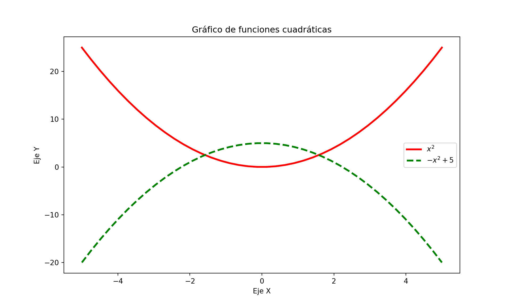
4.8.1.2 Configurar los límites de los ejes
x = np.linspace(-5, 5, 40)
# Definimos las funciones para hacer el plot
fx, gx = x**2, -x**2+5
#Cambiamos tamaño de figura
plt.figure(figsize=(10,6), dpi=80)
# Configuramos color y tipo de línea
plt.plot(x, fx, color="red", linewidth=2.5, linestyle="-", label= "$x^2$")
plt.plot(x, gx, color="green", linewidth=2.5, linestyle="-", label= "$-x^2 + 5$")
# Configuramos límites de los ejes
plt.xlim(-6,6)## (-6.0, 6.0)## (0.018080210387902567, 27.500000000000004)4.8.1.3 Configuración de ticks
x = np.linspace(-5, 5, 40)
# Definimos las funciones para hacer el plot
fx, gx = x**2, -x**2+5
#Cambiamos tamaño de figura
plt.figure(figsize=(10,10), dpi=80)
# Configuramos color y tipo de línea
plt.plot(x, fx, color="red", linewidth=2.5, linestyle="-", label= "$x^2$")
plt.plot(x, gx, color="green", linewidth=2.5, linestyle="-", label= "$-x^2 + 5$")
# Configuramos límites de los ejes
plt.xlim(-6,6)## (-6.0, 6.0)## (-22.0, 27.500000000000004)## ([<matplotlib.axis.XTick object at 0x0000012D3A1923D0>, <matplotlib.axis.XTick object at 0x0000012D3A3AFE90>, <matplotlib.axis.XTick object at 0x0000012D3A1DFDD0>, <matplotlib.axis.XTick object at 0x0000012D3A3F7050>, <matplotlib.axis.XTick object at 0x0000012D3A4010D0>, <matplotlib.axis.XTick object at 0x0000012D3A3F66D0>, <matplotlib.axis.XTick object at 0x0000012D3A403CD0>, <matplotlib.axis.XTick object at 0x0000012D3A405DD0>, <matplotlib.axis.XTick object at 0x0000012D3A407D50>, <matplotlib.axis.XTick object at 0x0000012D3A409D90>, <matplotlib.axis.XTick object at 0x0000012D3A40BBD0>], [Text(-5, 0, '−5'), Text(-4, 0, '−4'), Text(-3, 0, '−3'), Text(-2, 0, '−2'), Text(-1, 0, '−1'), Text(0, 0, '0'), Text(1, 0, '1'), Text(2, 0, '2'), Text(3, 0, '3'), Text(4, 0, '4'), Text(5, 0, '5')])## ([<matplotlib.axis.YTick object at 0x0000012D3A1B74D0>, <matplotlib.axis.YTick object at 0x0000012D3A18B450>, <matplotlib.axis.YTick object at 0x0000012D39F6C2D0>, <matplotlib.axis.YTick object at 0x0000012D3A40DF90>, <matplotlib.axis.YTick object at 0x0000012D3A41C0D0>, <matplotlib.axis.YTick object at 0x0000012D3A41E110>, <matplotlib.axis.YTick object at 0x0000012D3A40B350>, <matplotlib.axis.YTick object at 0x0000012D3A424890>, <matplotlib.axis.YTick object at 0x0000012D3A425490>, <matplotlib.axis.YTick object at 0x0000012D3A428890>], [Text(0, -20, '−20'), Text(0, -15, '−15'), Text(0, -10, '−10'), Text(0, -5, '−5'), Text(0, 0, '0'), Text(0, 5, '5'), Text(0, 10, '10'), Text(0, 15, '15'), Text(0, 20, '20'), Text(0, 25, '25')])4.8.1.4 Configurar label de los ticks
x = np.linspace(-5, 5, 40)
# Definimos las funciones para hacer el plot
fx, gx = x**2, -x**2+5
#Cambiamos tamaño de figura
plt.figure(figsize=(10,10), dpi=80)
# Configuramos color y tipo de línea
plt.plot(x, fx, color="red", linewidth=2.5, linestyle="-", label= "$x^2$")
plt.plot(x, gx, color="green", linewidth=2.5, linestyle="-", label= "$-x^2 + 5$")
# Configuramos límites de los ejes
plt.xlim(-6,6)## (-6.0, 6.0)## (-22.0, 27.500000000000004)## ([<matplotlib.axis.XTick object at 0x0000012D34CB7990>, <matplotlib.axis.XTick object at 0x0000012D3A40CAD0>, <matplotlib.axis.XTick object at 0x0000012D3A3B7D90>, <matplotlib.axis.XTick object at 0x0000012D3A240850>, <matplotlib.axis.XTick object at 0x0000012D3A242B10>, <matplotlib.axis.XTick object at 0x0000012D3A243F90>, <matplotlib.axis.XTick object at 0x0000012D3A23DB10>, <matplotlib.axis.XTick object at 0x0000012D3A23FC10>, <matplotlib.axis.XTick object at 0x0000012D3A251B90>, <matplotlib.axis.XTick object at 0x0000012D3A253C10>], [Text(-2.0, 0, '−2.0'), Text(-1.5, 0, '−1.5'), Text(-1.0, 0, '−1.0'), Text(-0.5, 0, '−0.5'), Text(0.0, 0, '0.0'), Text(0.5, 0, '0.5'), Text(1.0, 0, '1.0'), Text(1.5, 0, '1.5'), Text(2.0, 0, '2.0'), Text(2.5, 0, '2.5')])## ([<matplotlib.axis.YTick object at 0x0000012D3A406910>, <matplotlib.axis.YTick object at 0x0000012D3A48BA90>, <matplotlib.axis.YTick object at 0x0000012D3A45C750>, <matplotlib.axis.YTick object at 0x0000012D3A256B50>, <matplotlib.axis.YTick object at 0x0000012D3A260BD0>, <matplotlib.axis.YTick object at 0x0000012D3A262D10>, <matplotlib.axis.YTick object at 0x0000012D3A268C50>, <matplotlib.axis.YTick object at 0x0000012D3A2694D0>, <matplotlib.axis.YTick object at 0x0000012D3A26B3D0>, <matplotlib.axis.YTick object at 0x0000012D3A26D390>], [Text(0, -20, '−20'), Text(0, -15, '−15'), Text(0, -10, '−10'), Text(0, -5, '−5'), Text(0, 0, '0'), Text(0, 5, '5'), Text(0, 10, '10'), Text(0, 15, '15'), Text(0, 20, '20'), Text(0, 25, '25')])# Añadimos títulos al eje X, Y y título del plot
plt.xlabel('Eje X')
plt.ylabel('Eje Y')
plt.title('Gráfico de funciones cuadráticas')
plt.legend()
# Mostramos el plot
plt.show()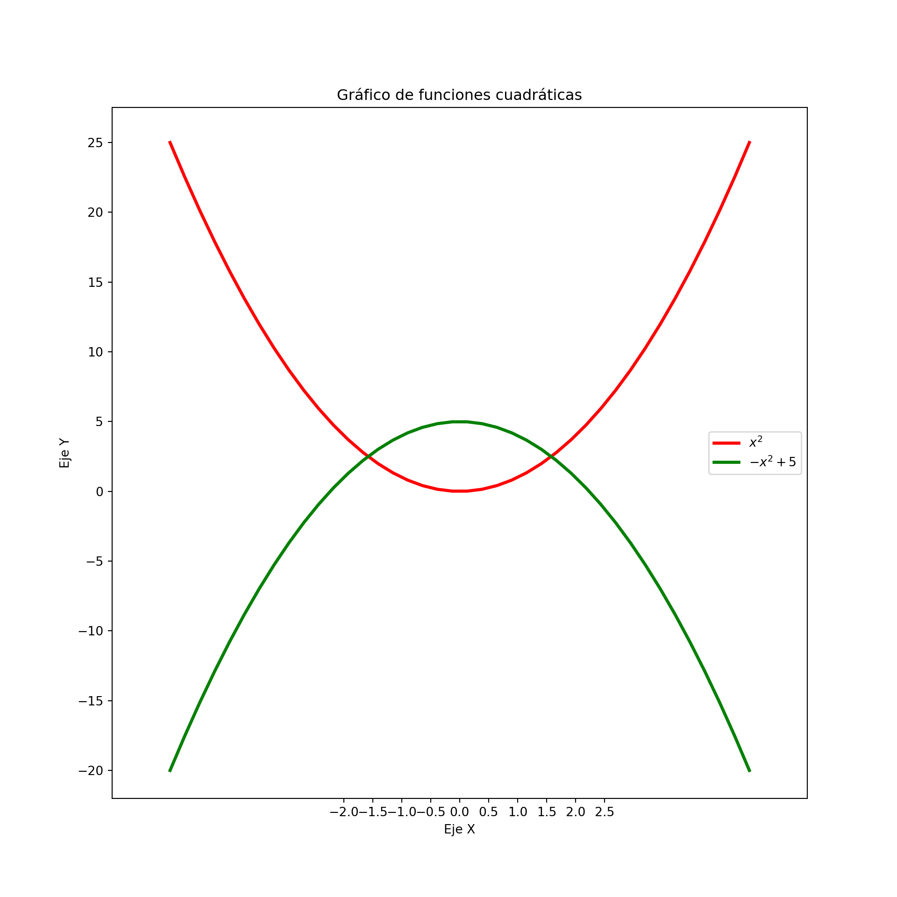
x = np.linspace(-5, 5, 40)
# Definimos las funciones para hacer el plot
fx, gx = x**2, -x**2+5
#Cambiamos tamaño de figura
plt.figure(figsize=(10,10), dpi=80)
# Configuramos color y tipo de línea
plt.plot(x, fx, color="red", linewidth=2.5, linestyle="-", label= "$x^2$")
plt.plot(x, gx, color="green", linewidth=2.5, linestyle="-", label= "$-x^2 + 5$")
# Configuramos límites de los ejes
plt.xlim(-6,6)## (-6.0, 6.0)## (-22.0, 27.500000000000004)# Configuración del label de los ticks
plt.xticks(np.arange(-2,3,0.5), [r'$-2$', r'$-\frac{3}{2}$', r'$-1$', r'$-\frac{1}{2}$', r'$0$',r'$\frac{1}{2}$', r'$1$', r'$\frac{3}{2}$', r'$2$', r'$\frac{5}{2}$'])## ([<matplotlib.axis.XTick object at 0x0000012D3A45EAD0>, <matplotlib.axis.XTick object at 0x0000012D3A404410>, <matplotlib.axis.XTick object at 0x0000012D3A45C410>, <matplotlib.axis.XTick object at 0x0000012D3A2FE490>, <matplotlib.axis.XTick object at 0x0000012D3A308610>, <matplotlib.axis.XTick object at 0x0000012D3A2B1C50>, <matplotlib.axis.XTick object at 0x0000012D3A2A39D0>, <matplotlib.axis.XTick object at 0x0000012D3A28F750>, <matplotlib.axis.XTick object at 0x0000012D3A3F55D0>, <matplotlib.axis.XTick object at 0x0000012D3A46F3D0>], [Text(-2.0, 0, '$-2$'), Text(-1.5, 0, '$-\\frac{3}{2}$'), Text(-1.0, 0, '$-1$'), Text(-0.5, 0, '$-\\frac{1}{2}$'), Text(0.0, 0, '$0$'), Text(0.5, 0, '$\\frac{1}{2}$'), Text(1.0, 0, '$1$'), Text(1.5, 0, '$\\frac{3}{2}$'), Text(2.0, 0, '$2$'), Text(2.5, 0, '$\\frac{5}{2}$')])## ([<matplotlib.axis.YTick object at 0x0000012D3A3A9AD0>, <matplotlib.axis.YTick object at 0x0000012D3A1C5A50>, <matplotlib.axis.YTick object at 0x0000012D3A2EC910>, <matplotlib.axis.YTick object at 0x0000012D3A23DA50>, <matplotlib.axis.YTick object at 0x0000012D3A2385D0>, <matplotlib.axis.YTick object at 0x0000012D3A23F3D0>, <matplotlib.axis.YTick object at 0x0000012D3A257190>, <matplotlib.axis.YTick object at 0x0000012D3A250890>, <matplotlib.axis.YTick object at 0x0000012D3A251A10>, <matplotlib.axis.YTick object at 0x0000012D3A240AD0>], [Text(0, -20, '−20'), Text(0, -15, '−15'), Text(0, -10, '−10'), Text(0, -5, '−5'), Text(0, 0, '0'), Text(0, 5, '5'), Text(0, 10, '10'), Text(0, 15, '15'), Text(0, 20, '20'), Text(0, 25, '25')])4.8.1.5 Mover los “spines”
Los “spines” en Matplotlib son las líneas que conectan las marcas de los ejes y delimitan el área de los datos en un gráfico. Hay cuatro “spines” en total: superior, inferior, izquierdo y derecho. Tradicionalmente, los “spines” están ubicados en los bordes del área de los datos.
La idea de cambiar la posición de los “spines” es tenerlos en el centro del gráfico, en lugar de en los bordes. Esto puede ser útil para ciertos tipos de gráficos donde se desea resaltar la región central del gráfico.
Descartar los “spines” superior y derecho: Para eliminar los “spines” superior y derecho, se establece su color en “none”, lo que hace que sean transparentes y no visibles en el gráfico.
Mover los “spines” inferior y izquierdo al origen de coordenadas de los datos: Esto significa que los “spines” inferior y izquierdo se moverán para que se encuentren en la posición donde los valores de los ejes x e y son cero, respectivamente. Esto se hace para colocar los “spines” en el centro del gráfico.
x = np.linspace(-5, 5, 40)
# Definimos las funciones para hacer el plot
fx, gx = x**2, -x**2+5
#Cambiamos tamaño de figura
plt.figure(figsize=(10,10), dpi=80)
# Configuramos color y tipo de línea
plt.plot(x, fx, color="red", linewidth=2.5, linestyle="-", label= "$x^2$")
plt.plot(x, gx, color="green", linewidth=2.5, linestyle="-", label= "$-x^2 + 5$")
# Configuramos límites de los ejes
plt.xlim(-6,6)## (-6.0, 6.0)## (-22.0, 27.500000000000004)# Configuración del label de los ticks
plt.xticks(np.arange(-2,3,0.5), [r'$-2$', r'$-\frac{3}{2}$', r'$-1$', r'$-\frac{1}{2}$', r'$0$',r'$\frac{1}{2}$', r'$1$', r'$\frac{3}{2}$', r'$2$', r'$\frac{5}{2}$'])## ([<matplotlib.axis.XTick object at 0x0000012D3A424450>, <matplotlib.axis.XTick object at 0x0000012D3A2C4710>, <matplotlib.axis.XTick object at 0x0000012D3A26CD50>, <matplotlib.axis.XTick object at 0x0000012D3A3D4510>, <matplotlib.axis.XTick object at 0x0000012D3A3E8E10>, <matplotlib.axis.XTick object at 0x0000012D3A18FCD0>, <matplotlib.axis.XTick object at 0x0000012D3A18C5D0>, <matplotlib.axis.XTick object at 0x0000012D3A3A95D0>, <matplotlib.axis.XTick object at 0x0000012D3A3A9C10>, <matplotlib.axis.XTick object at 0x0000012D3A18A150>], [Text(-2.0, 0, '$-2$'), Text(-1.5, 0, '$-\\frac{3}{2}$'), Text(-1.0, 0, '$-1$'), Text(-0.5, 0, '$-\\frac{1}{2}$'), Text(0.0, 0, '$0$'), Text(0.5, 0, '$\\frac{1}{2}$'), Text(1.0, 0, '$1$'), Text(1.5, 0, '$\\frac{3}{2}$'), Text(2.0, 0, '$2$'), Text(2.5, 0, '$\\frac{5}{2}$')])## ([<matplotlib.axis.YTick object at 0x0000012D3A2C4C90>, <matplotlib.axis.YTick object at 0x0000012D3A49E210>, <matplotlib.axis.YTick object at 0x0000012D3A18AB90>, <matplotlib.axis.YTick object at 0x0000012D3A1EF690>], [Text(0, -20, '$-20$'), Text(0, -10, '$-10$'), Text(0, 10, '$+10$'), Text(0, 20, '$+20$')])# Mover los spines
ax = plt.gca() # obtener los ejes actuales
ax.spines['right'].set_color('none')
ax.spines['top'].set_color('none')
ax.spines['bottom'].set_position('zero')
ax.spines['left'].set_position('zero')
# Otra forma de lograr lo anterior
#ax.xaxis.set_ticks_position('bottom')
#ax.spines['bottom'].set_position(('data',0))
#ax.yaxis.set_ticks_position('left')
#ax.spines['left'].set_position(('data',0))
# Añadimos títulos al eje X, Y y título del plot
plt.xlabel('Eje X')
plt.ylabel('Eje Y')
plt.title('Gráfico de funciones cuadráticas')
plt.legend()
# Mostramos el plot
plt.show()4.8.1.6 Añadir y configurar legendas
x = np.linspace(-5, 5, 40)
# Definimos las funciones para hacer el plot
fx, gx = x**2, -x**2+5
#Cambiamos tamaño de figura
plt.figure(figsize=(10,10), dpi=80)
# Configuramos color y tipo de línea
plt.plot(x, fx, color="red", linewidth=2.5, linestyle="-", label= "$x^2$")
plt.plot(x, gx, color="green", linewidth=2.5, linestyle="-", label= "$-x^2 + 5$")
# Configuramos límites de los ejes
plt.xlim(-6,6)## (-6.0, 6.0)## (-22.0, 27.500000000000004)# Configuración del label de los ticks
plt.xticks(np.arange(-2,3,0.5), [r'$-2$', r'$-\frac{3}{2}$', r'$-1$', r'$-\frac{1}{2}$', r'$0$',r'$\frac{1}{2}$', r'$1$', r'$\frac{3}{2}$', r'$2$', r'$\frac{5}{2}$'])## ([<matplotlib.axis.XTick object at 0x0000012D3A216810>, <matplotlib.axis.XTick object at 0x0000012D3A2C5010>, <matplotlib.axis.XTick object at 0x0000012D3A2DB790>, <matplotlib.axis.XTick object at 0x0000012D3A2616D0>, <matplotlib.axis.XTick object at 0x0000012D3A46ECD0>, <matplotlib.axis.XTick object at 0x0000012D3A18B9D0>, <matplotlib.axis.XTick object at 0x0000012D3A2EE290>, <matplotlib.axis.XTick object at 0x0000012D3A1F5910>, <matplotlib.axis.XTick object at 0x0000012D3A3ABF90>, <matplotlib.axis.XTick object at 0x0000012D3A3D6A50>], [Text(-2.0, 0, '$-2$'), Text(-1.5, 0, '$-\\frac{3}{2}$'), Text(-1.0, 0, '$-1$'), Text(-0.5, 0, '$-\\frac{1}{2}$'), Text(0.0, 0, '$0$'), Text(0.5, 0, '$\\frac{1}{2}$'), Text(1.0, 0, '$1$'), Text(1.5, 0, '$\\frac{3}{2}$'), Text(2.0, 0, '$2$'), Text(2.5, 0, '$\\frac{5}{2}$')])## ([<matplotlib.axis.YTick object at 0x0000012D3A261090>, <matplotlib.axis.YTick object at 0x0000012D3A144910>, <matplotlib.axis.YTick object at 0x0000012D3A18A5D0>, <matplotlib.axis.YTick object at 0x0000012D3A1C6C90>], [Text(0, -20, '$-20$'), Text(0, -10, '$-10$'), Text(0, 10, '$+10$'), Text(0, 20, '$+20$')])# Mover los spines
ax = plt.gca() # obtener los ejes actuales
ax.spines['right'].set_color('none')
ax.spines['top'].set_color('none')
ax.spines['bottom'].set_position('zero')
ax.spines['left'].set_position('zero')
# Otra forma de lograr lo anterior
#ax.xaxis.set_ticks_position('bottom')
#ax.spines['bottom'].set_position(('data',0))
#ax.yaxis.set_ticks_position('left')
#ax.spines['left'].set_position(('data',0))
# Añadimos títulos al eje X, Y y título del plot
plt.xlabel('Eje X')
plt.ylabel('Eje Y')
plt.title('Gráfico de funciones cuadráticas')
# Configurar posición de la leyenda
plt.legend(loc = 'center left')
#Otras configuraciones
#plt.legend(bbox_to_anchor=(1.05, 1), loc=2, borderaxespad=0.)
#plt.legend(bbox_to_anchor=(0., 1.02, 1., .102), loc=0, ncol=2, mode="expand", borderaxespad=0.)
#plt.legend(bbox_to_anchor=(1, 1), bbox_transform=plt.gcf().transFigure)
# Mostramos el plot
plt.show()Se pueden poner por separado también:
x = np.linspace(-5, 5, 40)
# Definimos las funciones para hacer el plot
fx, gx = x**2, -x**2+5
#Cambiamos tamaño de figura
plt.figure(figsize=(10,10), dpi=80)
# Configuramos color y tipo de línea
line1, = plt.plot(x, fx, color="red", linewidth=2.5, linestyle="-", label= "$x^2$")
line2, = plt.plot(x, gx, color="green", linewidth=2.5, linestyle="-", label= "$-x^2 + 5$")
# Configuramos límites de los ejes
plt.xlim(-6,6)## (-6.0, 6.0)## (-22.0, 27.500000000000004)# Configuración del label de los ticks
plt.xticks(np.arange(-2,3,0.5), [r'$-2$', r'$-\frac{3}{2}$', r'$-1$', r'$-\frac{1}{2}$', r'$0$',r'$\frac{1}{2}$', r'$1$', r'$\frac{3}{2}$', r'$2$', r'$\frac{5}{2}$'])## ([<matplotlib.axis.XTick object at 0x0000012D34C2E1D0>, <matplotlib.axis.XTick object at 0x0000012D3A2FC710>, <matplotlib.axis.XTick object at 0x0000012D3A23F510>, <matplotlib.axis.XTick object at 0x0000012D3A1AE290>, <matplotlib.axis.XTick object at 0x0000012D3A1EF210>, <matplotlib.axis.XTick object at 0x0000012D3A18FE90>, <matplotlib.axis.XTick object at 0x0000012D39F84D10>, <matplotlib.axis.XTick object at 0x0000012D39FAE050>, <matplotlib.axis.XTick object at 0x0000012D3A41E3D0>, <matplotlib.axis.XTick object at 0x0000012D3A3B6450>], [Text(-2.0, 0, '$-2$'), Text(-1.5, 0, '$-\\frac{3}{2}$'), Text(-1.0, 0, '$-1$'), Text(-0.5, 0, '$-\\frac{1}{2}$'), Text(0.0, 0, '$0$'), Text(0.5, 0, '$\\frac{1}{2}$'), Text(1.0, 0, '$1$'), Text(1.5, 0, '$\\frac{3}{2}$'), Text(2.0, 0, '$2$'), Text(2.5, 0, '$\\frac{5}{2}$')])## ([<matplotlib.axis.YTick object at 0x0000012D3A479250>, <matplotlib.axis.YTick object at 0x0000012D39F2AB90>, <matplotlib.axis.YTick object at 0x0000012D39F8A5D0>, <matplotlib.axis.YTick object at 0x0000012D3A1C7890>], [Text(0, -20, '$-20$'), Text(0, -10, '$-10$'), Text(0, 10, '$+10$'), Text(0, 20, '$+20$')])# Mover los spines
ax = plt.gca() # obtener los ejes actuales
ax.spines['right'].set_color('none')
ax.spines['top'].set_color('none')
ax.spines['bottom'].set_position('zero')
ax.spines['left'].set_position('zero')
# Añadimos títulos al eje X, Y y título del plot
plt.xlabel('Eje X')
plt.ylabel('Eje Y')
plt.title('Gráfico de funciones cuadráticas')
# Leyenda para la primera función
first_legend = plt.legend(handles=[line1], loc=1)
# Añadir la leyenda de la primera función
ax = plt.gca().add_artist(first_legend)
# Crear la segunda leyenda
plt.legend(handles=[line2], loc=4)
# Mostramos el plot
plt.show()Para ver ayuda sobre como usar las posiciones de las leyendas:
4.8.1.7 Realizar anotaciones
# Definimos las funciones para hacer el plot
x = np.linspace(-5, 5, 40)
fx, gx = x**2, -x**2+5
# Calculamos el punto máximo y mínimo de cada función
max_fx, min_fx = x[np.argmax(fx)], x[np.argmin(fx)]
max_gx, min_gx = x[np.argmax(gx)], x[np.argmin(gx)]
# Cambiamos tamaño de figura
plt.figure(figsize=(10,10), dpi=80)
# Configuramos color y tipo de línea
plt.plot(x, fx, color="red", linewidth=2.5, linestyle="-", label= "$x^2$")
plt.plot(x, gx, color="green", linewidth=2.5, linestyle="-", label= "$-x^2 + 5$")
# Configuramos límites de los ejes
plt.xlim(-6,6)## (-6.0, 6.0)## (-22.0, 27.500000000000004)# Configuración del label de los ticks
plt.xticks(np.arange(-2,3,0.5), [r'$-2$', r'$-\frac{3}{2}$', r'$-1$', r'$-\frac{1}{2}$', r'$0$',r'$\frac{1}{2}$', r'$1$', r'$\frac{3}{2}$', r'$2$', r'$\frac{5}{2}$'])## ([<matplotlib.axis.XTick object at 0x0000012D39F87950>, <matplotlib.axis.XTick object at 0x0000012D3A424410>, <matplotlib.axis.XTick object at 0x0000012D39F761D0>, <matplotlib.axis.XTick object at 0x0000012D3A1EE850>, <matplotlib.axis.XTick object at 0x0000012D3A28DA90>, <matplotlib.axis.XTick object at 0x0000012D3A28ED10>, <matplotlib.axis.XTick object at 0x0000012D3A3AEF50>, <matplotlib.axis.XTick object at 0x0000012D39F7F690>, <matplotlib.axis.XTick object at 0x0000012D3A3F4090>, <matplotlib.axis.XTick object at 0x0000012D3A43A9D0>], [Text(-2.0, 0, '$-2$'), Text(-1.5, 0, '$-\\frac{3}{2}$'), Text(-1.0, 0, '$-1$'), Text(-0.5, 0, '$-\\frac{1}{2}$'), Text(0.0, 0, '$0$'), Text(0.5, 0, '$\\frac{1}{2}$'), Text(1.0, 0, '$1$'), Text(1.5, 0, '$\\frac{3}{2}$'), Text(2.0, 0, '$2$'), Text(2.5, 0, '$\\frac{5}{2}$')])## ([<matplotlib.axis.YTick object at 0x0000012D39FAD110>, <matplotlib.axis.YTick object at 0x0000012D39F825D0>, <matplotlib.axis.YTick object at 0x0000012D3A406690>, <matplotlib.axis.YTick object at 0x0000012D3A1ABC10>], [Text(0, -20, '$-20$'), Text(0, -10, '$-10$'), Text(0, 10, '$+10$'), Text(0, 20, '$+20$')])# Mover los spines
ax = plt.gca() # obtener los ejes actuales
ax.spines['right'].set_color('none')
ax.spines['top'].set_color('none')
ax.spines['bottom'].set_position('zero')
ax.spines['left'].set_position('zero')
# Añadimos títulos al eje X, Y y título del plot
plt.xlabel('Eje X')
plt.ylabel('Eje Y')
plt.title('Gráfico de funciones cuadráticas')
# Marcamos los puntos máximos y mínimos con anotaciones
plt.annotate('Min $(%.1f, %.1f)$' % (min_fx, min(fx)),
xy=(min_fx, min(fx)), xycoords='data',
xytext=(-120, -40), textcoords='offset points', fontsize=12,
arrowprops=dict(arrowstyle="->", connectionstyle="arc3,rad=.2"))
plt.annotate('Máx $(%.1f, %.1f)$' % (max_gx, max(gx)),
xy=(max_gx, max(gx)), xycoords='data',
xytext=(+10, +30), textcoords='offset points', fontsize=12,
arrowprops=dict(arrowstyle="->", connectionstyle="arc3,rad=.2"))
# Configurar posición de la leyenda
plt.legend(loc = 'center left')
# Mostramos el plot
plt.show()Vamos a desglosar la función plt.annotate() y sus argumentos:
'Min $(%.1f, %.1f)$' % (min_fx, min(fx)): Esta parte crea el texto que se mostrará como la anotación. El%se utiliza para formatear la cadena con los valores demin_fxymin(fx), que son las coordenadas del punto mínimo en el eje x y y respectivamente. El.1fasegura que solo se muestre un decimal en el texto.xy=(min_fx, min(fx)): Establece las coordenadas del punto donde se colocará la anotación. En este caso,min_fxymin(fx)representan las coordenadas del punto mínimo en el gráfico.xycoords='data': Especifica el sistema de coordenadas utilizado para las coordenadasxy. En este caso, se refiere al sistema de coordenadas de los datos.xytext=(-50, -30): Especifica las coordenadas del texto de la anotación. En este caso, se desplaza el texto 50 puntos hacia la izquierda y 30 puntos hacia abajo desde la posición del punto.textcoords='offset points': Indica el sistema de coordenadas utilizado para las coordenadasxytext. En este caso, se utiliza un sistema de coordenadas desplazado desde el punto de datos.fontsize=12: Establece el tamaño de fuente del texto de la anotación.arrowprops=dict(arrowstyle="->", connectionstyle="arc3,rad=.2"): Define las propiedades de la flecha que se utilizará para señalar el punto de la anotación. En este caso, la flecha tendrá un estilo de punta de flecha (arrowstyle="->") y una conexión curva (connectionstyle="arc3,rad=.2"). La conexión curva se especifica con un radio de curvatura de0.2(rad=.2).
4.8.1.8 Más detalles
# Definimos las funciones para hacer el plot
x = np.linspace(-5, 5, 40)
fx, gx = x**2, -x**2+5
# Calculamos el punto máximo y mínimo de cada función
max_fx, min_fx = x[np.argmax(fx)], x[np.argmin(fx)]
max_gx, min_gx = x[np.argmax(gx)], x[np.argmin(gx)]
# Cambiamos tamaño de figura
plt.figure(figsize=(10,10), dpi=80)
# Configuramos color y tipo de línea
plt.plot(x, fx, color="red", linewidth=2.5, linestyle="-", label= "$x^2$")
plt.plot(x, gx, color="green", linewidth=2.5, linestyle="-", label= "$-x^2 + 5$")
# Configuramos límites de los ejes con cero centrado
plt.xlim(-5, 5)## (-5.0, 5.0)## (-20.0, 20.0)# Configuración del label de los ticks
plt.xticks(np.arange(-2,3,0.5), [r'$-2$', r'$-\frac{3}{2}$', r'$-1$', r'$-\frac{1}{2}$', r'$0$',r'$\frac{1}{2}$', r'$1$', r'$\frac{3}{2}$', r'$2$', r'$\frac{5}{2}$'])## ([<matplotlib.axis.XTick object at 0x0000012D39F74050>, <matplotlib.axis.XTick object at 0x0000012D3A190210>, <matplotlib.axis.XTick object at 0x0000012D3A497510>, <matplotlib.axis.XTick object at 0x0000012D368BDE50>, <matplotlib.axis.XTick object at 0x0000012D3A1C6950>, <matplotlib.axis.XTick object at 0x0000012D3A23E4D0>, <matplotlib.axis.XTick object at 0x0000012D39FA3DD0>, <matplotlib.axis.XTick object at 0x0000012D39FA20D0>, <matplotlib.axis.XTick object at 0x0000012D3A2C41D0>, <matplotlib.axis.XTick object at 0x0000012D3A46E310>], [Text(-2.0, 0, '$-2$'), Text(-1.5, 0, '$-\\frac{3}{2}$'), Text(-1.0, 0, '$-1$'), Text(-0.5, 0, '$-\\frac{1}{2}$'), Text(0.0, 0, '$0$'), Text(0.5, 0, '$\\frac{1}{2}$'), Text(1.0, 0, '$1$'), Text(1.5, 0, '$\\frac{3}{2}$'), Text(2.0, 0, '$2$'), Text(2.5, 0, '$\\frac{5}{2}$')])## ([<matplotlib.axis.YTick object at 0x0000012D3A163DD0>, <matplotlib.axis.YTick object at 0x0000012D3A26C310>, <matplotlib.axis.YTick object at 0x0000012D3A3F42D0>, <matplotlib.axis.YTick object at 0x0000012D3A4007D0>], [Text(0, -20, '$-20$'), Text(0, -10, '$-10$'), Text(0, 10, '$+10$'), Text(0, 20, '$+20$')])# Mover los spines
ax = plt.gca() # obtener los ejes actuales
ax.spines['right'].set_color('none')
ax.spines['top'].set_color('none')
ax.spines['bottom'].set_position('zero')
ax.spines['left'].set_position('zero')
# Añadimos títulos al eje X, Y y título del plot
plt.xlabel('Eje X')
plt.ylabel('Eje Y')
plt.title('Gráfico de funciones cuadráticas')
# Marcamos los puntos máximos y mínimos con anotaciones
plt.annotate('Min $(%.1f, %.1f)$' % (min_fx, min(fx)),
xy=(min_fx, min(fx)), xycoords='data',
xytext=(-120, -40), textcoords='offset points', fontsize=12,
arrowprops=dict(arrowstyle="->", connectionstyle="arc3,rad=.2"))
plt.annotate('Máx $(%.1f, %.1f)$' % (max_gx, max(gx)),
xy=(max_gx, max(gx)), xycoords='data',
xytext=(+10, +30), textcoords='offset points', fontsize=12,
arrowprops=dict(arrowstyle="->", connectionstyle="arc3,rad=.2"))
for label in ax.get_xticklabels() + ax.get_yticklabels():
label.set_fontsize(14)
label.set_bbox(dict(facecolor='white', edgecolor='None', alpha=0.65))
# Configurar posición de la leyenda
plt.legend(loc = 'center left')
# Mostramos el plot
plt.show()4.8.1.9 Subplots
Como vimos, una Figura en matplotlib es toda la ventana, toda la interface. Podemos crear varios subplots en una figura y configurar cada uno de ellos.
fig = plt.figure() # Una figura vacía
fig, ax = plt.subplots() # una figura con solo un axes
fig, axs = plt.subplots(2, 2) # un grid de figuras 2x2
# una figura con un subplot a la izquierda y dos a la derecha
fig, axs = plt.subplot_mosaic([['left', 'right_top'],
['left', 'right_bottom']])Con el ejemplo de las funciones que hemos estado trabajando, podríamos separarlas en dos subplots como sigue.
# Definimos las funciones para hacer el plot
x = np.linspace(-5, 5, 40)
fx, gx = x**2, -x**2 + 5
# Calculamos el punto máximo y mínimo de cada función
max_fx, min_fx = x[np.argmax(fx)], x[np.argmin(fx)]
max_gx, min_gx = x[np.argmax(gx)], x[np.argmin(gx)]
# Configuramos tamaño de figura y creamos subplots
plt.figure(figsize=(10, 10))
# Subplot para la función fx = x^2
plt.subplot(2, 1, 1)
plt.plot(x, fx, color="red", linewidth=2.5, linestyle="-", label="$x^2$")
plt.xlim(-6, 6)## (-6.0, 6.0)## (0.018080210387902567, 27.500000000000004)plt.xticks(np.arange(-2, 3, 0.5), [r'$-2$', r'$-\frac{3}{2}$', r'$-1$', r'$-\frac{1}{2}$', r'$0$', r'$\frac{1}{2}$', r'$1$', r'$\frac{3}{2}$', r'$2$', r'$\frac{5}{2}$'])## ([<matplotlib.axis.XTick object at 0x0000012D368816D0>, <matplotlib.axis.XTick object at 0x0000012D368B0210>, <matplotlib.axis.XTick object at 0x0000012D3970E210>, <matplotlib.axis.XTick object at 0x0000012D36895590>, <matplotlib.axis.XTick object at 0x0000012D3A457250>, <matplotlib.axis.XTick object at 0x0000012D3A3BD250>, <matplotlib.axis.XTick object at 0x0000012D3A3BF090>, <matplotlib.axis.XTick object at 0x0000012D3A3E5090>, <matplotlib.axis.XTick object at 0x0000012D3A13AA10>, <matplotlib.axis.XTick object at 0x0000012D3A3E7050>], [Text(-2.0, 0, '$-2$'), Text(-1.5, 0, '$-\\frac{3}{2}$'), Text(-1.0, 0, '$-1$'), Text(-0.5, 0, '$-\\frac{1}{2}$'), Text(0.0, 0, '$0$'), Text(0.5, 0, '$\\frac{1}{2}$'), Text(1.0, 0, '$1$'), Text(1.5, 0, '$\\frac{3}{2}$'), Text(2.0, 0, '$2$'), Text(2.5, 0, '$\\frac{5}{2}$')])## ([<matplotlib.axis.YTick object at 0x0000012D3686AA10>, <matplotlib.axis.YTick object at 0x0000012D3A26C310>, <matplotlib.axis.YTick object at 0x0000012D3A1CC2D0>, <matplotlib.axis.YTick object at 0x0000012D3A3CB650>], [Text(0, -20, '$-20$'), Text(0, -10, '$-10$'), Text(0, 10, '$+10$'), Text(0, 20, '$+20$')])plt.xlabel('Eje X')
plt.ylabel('Eje Y')
plt.title('Función $x^2$')
plt.annotate('Min $(%.1f, %.1f)$' % (min_fx, min(fx)),
xy=(min_fx, min(fx)), xycoords='data',
xytext=(-120, -40), textcoords='offset points', fontsize=12,
arrowprops=dict(arrowstyle="->", connectionstyle="arc3,rad=.2"))
plt.legend(loc='upper left')
# Subplot para la función gx = -x^2 + 5
plt.subplot(2, 1, 2)
plt.plot(x, gx, color="green", linewidth=2.5, linestyle="-", label="$-x^2 + 5$")
plt.xlim(-6, 6)## (-6.0, 6.0)## (-22.0, 5.481919789612098)plt.xticks(np.arange(-2, 3, 0.5), [r'$-2$', r'$-\frac{3}{2}$', r'$-1$', r'$-\frac{1}{2}$', r'$0$', r'$\frac{1}{2}$', r'$1$', r'$\frac{3}{2}$', r'$2$', r'$\frac{5}{2}$'])## ([<matplotlib.axis.XTick object at 0x0000012D34925710>, <matplotlib.axis.XTick object at 0x0000012D3A454050>, <matplotlib.axis.XTick object at 0x0000012D39F7DE10>, <matplotlib.axis.XTick object at 0x0000012D3A2AF390>, <matplotlib.axis.XTick object at 0x0000012D3A291590>, <matplotlib.axis.XTick object at 0x0000012D3A293590>, <matplotlib.axis.XTick object at 0x0000012D3A2956D0>, <matplotlib.axis.XTick object at 0x0000012D3A290A10>, <matplotlib.axis.XTick object at 0x0000012D3A297FD0>, <matplotlib.axis.XTick object at 0x0000012D39611E50>], [Text(-2.0, 0, '$-2$'), Text(-1.5, 0, '$-\\frac{3}{2}$'), Text(-1.0, 0, '$-1$'), Text(-0.5, 0, '$-\\frac{1}{2}$'), Text(0.0, 0, '$0$'), Text(0.5, 0, '$\\frac{1}{2}$'), Text(1.0, 0, '$1$'), Text(1.5, 0, '$\\frac{3}{2}$'), Text(2.0, 0, '$2$'), Text(2.5, 0, '$\\frac{5}{2}$')])## ([<matplotlib.axis.YTick object at 0x0000012D34D0E850>, <matplotlib.axis.YTick object at 0x0000012D36894E10>, <matplotlib.axis.YTick object at 0x0000012D3A49C650>, <matplotlib.axis.YTick object at 0x0000012D3964A950>], [Text(0, -20, '$-20$'), Text(0, -10, '$-10$'), Text(0, 10, '$+10$'), Text(0, 20, '$+20$')])plt.xlabel('Eje X')
plt.ylabel('Eje Y')
plt.title('Función $-x^2 + 5$')
plt.annotate('Máx $(%.1f, %.1f)$' % (max_gx, max(gx)),
xy=(max_gx, max(gx)), xycoords='data',
xytext=(+10, +30), textcoords='offset points', fontsize=12,
arrowprops=dict(arrowstyle="->", connectionstyle="arc3,rad=.2"))
plt.legend(loc='upper left')
# Mostramos el plot
plt.tight_layout()
plt.show()Con el método OO:
# Definimos las funciones para hacer el plot
x = np.linspace(-5, 5, 40)
fx, gx = x**2, -x**2 + 5
# Calculamos el punto máximo y mínimo de cada función
max_fx, min_fx = x[np.argmax(fx)], x[np.argmin(fx)]
max_gx, min_gx = x[np.argmax(gx)], x[np.argmin(gx)]
# Cambiamos tamaño de figura
fig, axs = plt.subplots(2, 1, figsize=(10, 10))
# Configuramos color y tipo de línea para la primera función
axs[0].plot(x, fx, color="red", linewidth=2.5, linestyle="-", label="$x^2$")
axs[0].set_xlim(-6, 6)## (-6.0, 6.0)## (0.018080210387902567, 27.500000000000004)axs[0].set_xticks(np.arange(-2, 3, 0.5))
axs[0].set_yticks([-20, -10, 10, 20])
axs[0].set_xlabel('Eje X')
axs[0].set_ylabel('Eje Y')
axs[0].set_title('Función $x^2$')
# Anotaciones en el subplot de la primera función
axs[0].annotate('Min $(%.1f, %.1f)$' % (min_fx, min(fx)),
xy=(min_fx, min(fx)), xycoords='data',
xytext=(-120, -40), textcoords='offset points', fontsize=12,
arrowprops=dict(arrowstyle="->", connectionstyle="arc3,rad=.2"))
# Configurar posición de la leyenda en el subplot de la primera función
axs[0].legend(loc='upper left')
# Configuramos color y tipo de línea para la segunda función
axs[1].plot(x, gx, color="green", linewidth=2.5, linestyle="-", label="$-x^2 + 5$")
axs[1].set_xlim(-6, 6)## (-6.0, 6.0)## (-22.0, 5.481919789612098)axs[1].set_xticks(np.arange(-2, 3, 0.5))
axs[1].set_yticks([-20, -10, 10, 20])
axs[1].set_xticklabels([r'$-2$', r'$-\frac{3}{2}$', r'$-1$', r'$-\frac{1}{2}$', r'$0$', r'$\frac{1}{2}$', r'$1$', r'$\frac{3}{2}$', r'$2$', r'$\frac{5}{2}$'])
axs[1].set_yticklabels([r'$-20$', r'$-10$', r'$+10$', r'$+20$'])
axs[1].set_xlabel('Eje X')
axs[1].set_ylabel('Eje Y')
axs[1].set_title('Función $-x^2 + 5$')
# Anotaciones en el subplot de la segunda función
axs[1].annotate('Máx $(%.1f, %.1f)$' % (max_gx, max(gx)),
xy=(max_gx, max(gx)), xycoords='data',
xytext=(+10, +30), textcoords='offset points', fontsize=12,
arrowprops=dict(arrowstyle="->", connectionstyle="arc3,rad=.2"))
# Configurar posición de la leyenda en el subplot de la segunda función
axs[1].legend(loc='upper left')
# Mostramos el plot
plt.tight_layout()
plt.show()4.8.1.10 Paletas de colores
Existen varias paletas de colores que podemos usar.
## ['magma', 'inferno', 'plasma', 'viridis', 'cividis', 'twilight', 'twilight_shifted', 'turbo', 'Blues', 'BrBG', 'BuGn', 'BuPu', 'CMRmap', 'GnBu', 'Greens', 'Greys', 'OrRd', 'Oranges', 'PRGn', 'PiYG', 'PuBu', 'PuBuGn', 'PuOr', 'PuRd', 'Purples', 'RdBu', 'RdGy', 'RdPu', 'RdYlBu', 'RdYlGn', 'Reds', 'Spectral', 'Wistia', 'YlGn', 'YlGnBu', 'YlOrBr', 'YlOrRd', 'afmhot', 'autumn', 'binary', 'bone', 'brg', 'bwr', 'cool', 'coolwarm', 'copper', 'cubehelix', 'flag', 'gist_earth', 'gist_gray', 'gist_heat', 'gist_ncar', 'gist_rainbow', 'gist_stern', 'gist_yarg', 'gnuplot', 'gnuplot2', 'gray', 'hot', 'hsv', 'jet', 'nipy_spectral', 'ocean', 'pink', 'prism', 'rainbow', 'seismic', 'spring', 'summer', 'terrain', 'winter', 'Accent', 'Dark2', 'Paired', 'Pastel1', 'Pastel2', 'Set1', 'Set2', 'Set3', 'tab10', 'tab20', 'tab20b', 'tab20c', 'magma_r', 'inferno_r', 'plasma_r', 'viridis_r', 'cividis_r', 'twilight_r', 'twilight_shifted_r', 'turbo_r', 'Blues_r', 'BrBG_r', 'BuGn_r', 'BuPu_r', 'CMRmap_r', 'GnBu_r', 'Greens_r', 'Greys_r', 'OrRd_r', 'Oranges_r', 'PRGn_r', 'PiYG_r', 'PuBu_r', 'PuBuGn_r', 'PuOr_r', 'PuRd_r', 'Purples_r', 'RdBu_r', 'RdGy_r', 'RdPu_r', 'RdYlBu_r', 'RdYlGn_r', 'Reds_r', 'Spectral_r', 'Wistia_r', 'YlGn_r', 'YlGnBu_r', 'YlOrBr_r', 'YlOrRd_r', 'afmhot_r', 'autumn_r', 'binary_r', 'bone_r', 'brg_r', 'bwr_r', 'cool_r', 'coolwarm_r', 'copper_r', 'cubehelix_r', 'flag_r', 'gist_earth_r', 'gist_gray_r', 'gist_heat_r', 'gist_ncar_r', 'gist_rainbow_r', 'gist_stern_r', 'gist_yarg_r', 'gnuplot_r', 'gnuplot2_r', 'gray_r', 'hot_r', 'hsv_r', 'jet_r', 'nipy_spectral_r', 'ocean_r', 'pink_r', 'prism_r', 'rainbow_r', 'seismic_r', 'spring_r', 'summer_r', 'terrain_r', 'winter_r', 'Accent_r', 'Dark2_r', 'Paired_r', 'Pastel1_r', 'Pastel2_r', 'Set1_r', 'Set2_r', 'Set3_r', 'tab10_r', 'tab20_r', 'tab20b_r', 'tab20c_r']Los colores los podemos indicar en diferentes formatos:
RGB o RGBA:
(0.1, 0.2, 0.5), (0.1, 0.2, 0.5, 0.3)Cadena de RGB o RGBA:
'#0f0f0f','#0f0f0f80'Hex RGB o RGBA:
'#abc'='aabbcc','#fb1'='#ffbb11'Escala de grises en escala de [0,1]:
'0'(negro),'1'(blanco),'0.8'(gris claro)Abreviación de colores básicos:
- ‘b’ = blue
- ‘g’ = green
- ‘r’ = red
- ‘c’ = cyan
- ‘m’ = magenta
- ‘y’ = yellow
- ‘k’ = black
- ‘w’ = white
Nombre del color:
'aquamarine','mediumseagreen'Del ciclo de colores default:
C0,C1, donde el ciclo es['#1f77b4', '#ff7f0e', '#2ca02c', '#d62728', '#9467bd', '#8c564b', '#e377c2', '#7f7f7f', '#bcbd22', '#17becf']Tupla de color y valor de transparencia alfa:
('green',0.3)
A los colores les podemos indicar también un nivel de transparencia que se llama alpha:
## (-0.2, 13.0)## (-1.0, 1.0)## (-0.2, 13.0, -1.0, 1.0)4.8.1.11 Orden de los elementos
El orden de dibujo de los artistas en Matplotlib está determinado por su atributo zorder, que es un número decimal flotante. Los artistas con un zorder más alto se dibujan encima de los artistas con un zorder más bajo. Esto es útil cuando se tienen múltiples elementos en un gráfico y se desea controlar qué elementos están encima de otros.
Por defecto, Matplotlib asigna un valor de zorder dependiendo del tipo de artista. Los artistas más comunes, como las líneas, los puntos y los contornos, suelen tener un valor de zorder predeterminado más alto para que se dibujen encima de otros elementos.
Por ejemplo, si se tiene una línea y un marcador en un gráfico, la línea se dibujará encima del marcador si tienen el mismo color y estilo. Sin embargo, si se desea que el marcador se dibuje encima de la línea, se puede ajustar el zorder del marcador para que sea mayor que el de la línea.
r = np.linspace(0.3, 1, 30)
theta = np.linspace(0, 4*np.pi, 30)
x = r * np.sin(theta)
y = r * np.cos(theta)
plt.figure(figsize=(10, 5))
plt.subplot(1, 2, 1)
plt.plot(x, y, 'C3', lw=3)
plt.scatter(x, y, s=120)
plt.title('Líneas sobre los puntos')
plt.subplot(1, 2, 2)
plt.plot(x, y, 'C3', lw=3)
plt.scatter(x, y, s=120, zorder=2.5) # mover los puntos encima de la línea
plt.title('Puntos sobre las líneas')
plt.tight_layout()
plt.show()4.8.2 Tipos de plots
4.8.2.1 Áreas entre curvas
La función fill_between() en Matplotlib se utiliza para crear áreas sombreadas entre dos curvas o entre una curva y un eje. Esto puede ser útil para resaltar ciertas regiones en un gráfico.
# Definimos los datos
x = np.linspace(0, 10, 100)
y1 = np.sin(x)
y2 = np.cos(x)
# Creamos el gráfico
plt.figure(figsize=(8, 6))
# Graficamos las curvas
plt.plot(x, y1, color="#a1dab4", label='sin(x)')
plt.plot(x, y2, color="#253494", label='cos(x)')
# Rellenamos el área entre las curvas y=sen(x) y y=cos(x)
plt.fill_between(x, y1, y2, where=(y1 >= y2), color=(0.1, 0.2, 0.5), alpha=0.3, interpolate=True, label='Área entre curvas')
# Añadimos etiquetas y título
plt.xlabel('x')
plt.ylabel('y')
plt.title('Área sombreada entre curvas')
# Mover la leyenda fuera del gráfico
plt.legend(loc='upper left', bbox_to_anchor=(1, 1))
# Mostramos el gráfico
plt.grid(True)
plt.show()El parámetro interpolate en la función fill_between() de Matplotlib controla si se debe interpolar entre los puntos de datos al rellenar el área entre las curvas.
Cuando interpolate está establecido en True, Matplotlib interpolará suavemente entre los puntos de datos para crear un área sombreada más suave entre las curvas. Esto puede ser útil cuando los datos están espaciados de manera irregular o cuando se desea una representación visualmente más atractiva del área sombreada.
4.8.2.2 Scatter plot o gráfico de dispersión
# Definimos los datos
np.random.seed(0)
n = 100
x = np.random.rand(n)
y = np.random.rand(n)
colors = np.arctan2(y, x) # Calculamos el ángulo para determinar el color
sizes = 1000 * np.random.rand(n) # Tamaño de los marcadores
# Creamos el gráfico
plt.figure(figsize=(8, 6))
# Graficamos los marcadores
plt.scatter(x, y, c=colors, s=sizes, alpha=0.5, cmap='hsv')
# Añadimos etiquetas y título
plt.xlabel('X')
plt.ylabel('Y')
plt.title('Gráfico de marcadores con color según el ángulo')
# Mostramos la barra de color
plt.colorbar(label='Ángulo')## <matplotlib.colorbar.Colorbar object at 0x0000012D3AB18510>La función sns.scatterplot() es una herramienta de Seaborn para crear gráficos de dispersión. Este tipo de gráfico se utiliza comúnmente para visualizar la relación entre dos variables continuas.
Los argumentos principales de sns.scatterplot():
x: Este es el primer argumento y representa los datos para el eje x del gráfico de dispersión. Puede ser una serie de pandas, un array de NumPy, una lista o cualquier otra estructura de datos similar que contenga los valores de la variable para el eje x.
y: Este es el segundo argumento y representa los datos para el eje y del gráfico de dispersión. Al igual que el argumento
x, puede ser una serie de pandas, un array de NumPy, una lista u otra estructura de datos similar que contenga los valores de la variable para el eje y.hue: Este argumento es opcional y se utiliza para asignar un color diferente a cada categoría de una variable categórica. Puede ser una serie de pandas, un array de NumPy, una lista u otra estructura de datos similar que contenga los valores de la variable categórica.
size: Otro argumento opcional que se utiliza para controlar el tamaño de los puntos en el gráfico de dispersión. Puede ser una serie de pandas, un array de NumPy, una lista u otra estructura de datos similar que contenga los valores del tamaño de los puntos.
sizes: Este argumento opcional permite especificar el rango de tamaños de los puntos en el gráfico de dispersión. Puede ser una tupla que contenga el tamaño mínimo y máximo que se asignará a los puntos en el gráfico.
alpha: Este argumento opcional controla la transparencia de los puntos en el gráfico de dispersión. Un valor de 0 significa completamente transparente, mientras que un valor de 1 significa completamente opaco.
palette: Este argumento opcional se utiliza para especificar la paleta de colores que se utilizará para mapear los valores de la variable categórica en el argumento
huea colores en el gráfico de dispersión.
La función tiene más opciones para personalizar aún más el aspecto del gráfico, como style, markers, edgecolor, linewidth, entre otros.
Ejercicio 1: Usando seaborn, carga la base de datos iris y crea un gráfico de dispersión con matplotlib (sin dividir por color la especie) de la longitud del sepalo vs la anchura del sepalo.
Si usamos la siguiente opción de seaborn, podríamos crear un gráfico de dispersión de la longitud del pétalo vs su anchura de la base de datos iris donde estén coloreados por especie.
# Cargar la base de datos Iris
iris = sns.load_dataset('iris')
# Crear el gráfico de dispersión con Seaborn
plt.figure(figsize=(8, 6))
sns.scatterplot(data=iris, x='petal_length', y='petal_width', hue='species')
plt.xlabel('Longitud del Pétalo (cm)')
plt.ylabel('Anchura del Pétalo (cm)')
plt.title('Gráfico de dispersión de longitud vs anchura del pétalo por especie')
plt.grid(True)
plt.show()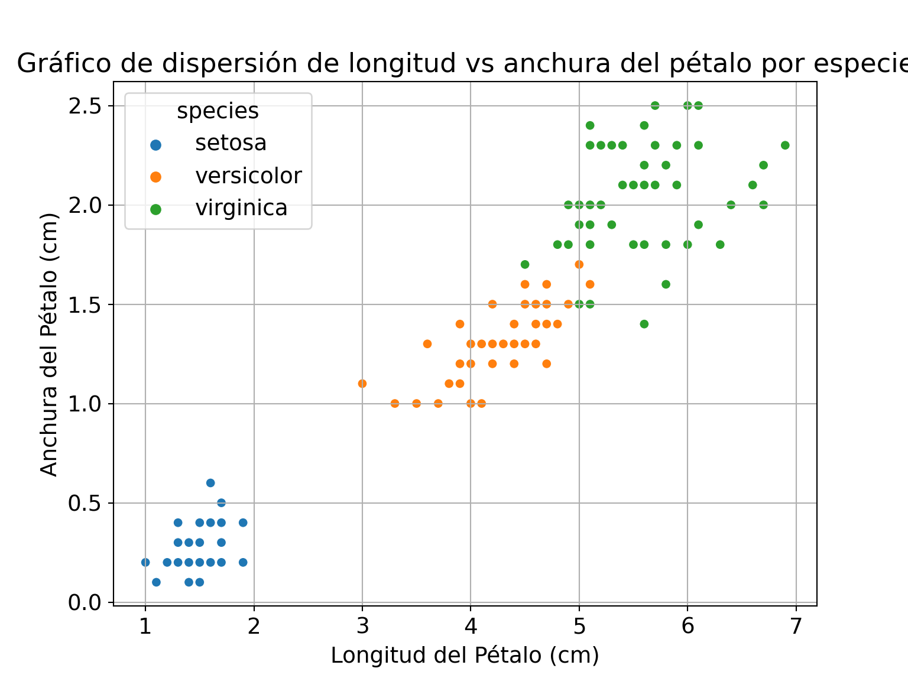
Con matplotlib una estrategía para hacer un plot similar es la siguiente:
# Cargar la base de datos Iris
# Creamos el scatter plot
plt.figure(figsize=(8, 6))
# Scatter plot para la especie 'setosa'
setosa = plt.scatter(iris[iris['species'] == 'setosa']['sepal_length'], iris[iris['species'] == 'setosa']['sepal_width'], c='C0', cmap='viridis', s=50, alpha=0.7, edgecolors='w', label='setosa')
# Scatter plot para la especie 'virginica'
virginica = plt.scatter(iris[iris['species'] == 'virginica']['sepal_length'], iris[iris['species'] == 'virginica']['sepal_width'], c='C1', cmap='viridis', s=50, alpha=0.7, edgecolors='w', label='virginica')
# Scatter plot para la especie 'versicolor'
versicolor = plt.scatter(iris[iris['species'] == 'versicolor']['sepal_length'], iris[iris['species'] == 'versicolor']['sepal_width'], c='C2', cmap='viridis', s=50, alpha=0.7, edgecolors='w', label='versicolor')
# Añadimos etiquetas y título
plt.xlabel('Longitud del Sépalo')
plt.ylabel('Ancho del Sépalo')
plt.title('Longitud y Ancho del Sépalo')
# Mostrar leyenda
plt.legend(loc='lower right', title='Especies')
# Mostrar el gráfico
plt.show()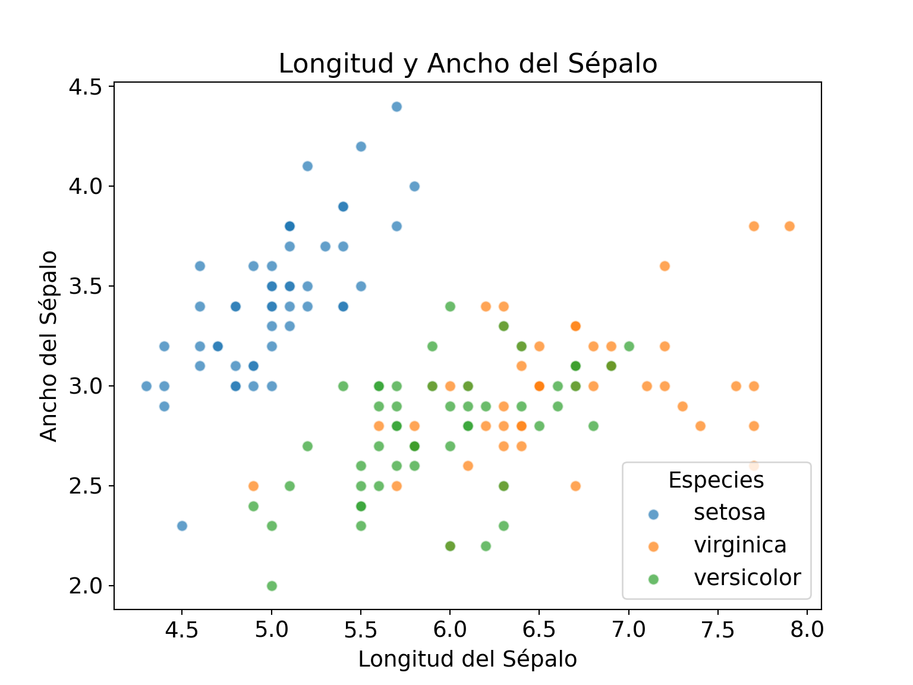
y la segunda sería creando una variable adicional:
# Cargamos los datos Iris
# Mapeamos los nombres de especies a números para la coloración
species_mapping = {'setosa': 0, 'versicolor': 1, 'virginica': 2}
iris['species_encoded'] = iris['species'].map(species_mapping)
# Creamos el scatter plot
plt.figure(figsize=(8, 6))
scatter = plt.scatter(iris['sepal_length'], iris['sepal_width'], c=iris['species_encoded'], cmap='viridis', s=50, alpha=0.7, edgecolors='w')
# Añadimos etiquetas y título
plt.xlabel('Longitud del Sépalo')
plt.ylabel('Ancho del Sépalo')
plt.title('Longitud y Ancho del Sépalo')
# Obtenemos los colores de la leyenda
colors = [scatter.cmap(scatter.norm(value)) for value in range(len(species_mapping))]
# Creamos la leyenda
legend = plt.legend(handles=scatter.legend_elements()[0], labels=species_mapping.keys(), loc='lower right', title='Especies')
# Asignamos los colores a los puntos de la leyenda
for handle, color in zip(legend.legendHandles, colors):
handle.set_color(color)
# Mostramos el gráfico
plt.grid(True)
plt.show()Ejercicio 2: Usando la base de datos penguins de seaborn crea el siguiente gráfico de dispersión.
4.8.2.3 Gráfico de barras
# Datos
categories = ['0-20', '21-40', '41-60', '61-80', '81+']
women_counts = [50, 120, 80, 30, 10]
men_counts = [40, 100, 70, 25, 5]
color_above = 'lightcoral'
color_below = 'lightblue'
offset = 5 # Offset para las barras arriba del eje x
# Creamos el gráfico de barras
plt.figure(figsize=(10, 6))
# Barras superiores (mujeres)
plt.bar(categories, women_counts, color=color_above, label='Mujeres')
# Barras inferiores (hombres)
plt.bar(categories, [-count for count in men_counts], color=color_below, label='Hombres')
# Añadimos etiquetas y título
plt.xlabel('Rango de Edad')
plt.ylabel('Cantidad')
plt.title('Cantidad de Mujeres y Hombres por Rango de Edad en un Centro de Convenciones')
# Añadimos la leyenda
plt.legend()
# Mostramos el gráfico
plt.grid(True)
plt.show()Ejercicio: Usando la base de datos penguins de seaborn, crea un gráfico de barras que muestre la cantidad promedio de pingüinos de cada especie en la base de datos.
Nota: Si queremos usar la función de matplotlib, para lograr el mismo resultado debemos primero calcular el promedio de las longitudes de los picos y realizar el plot de esos datos. Una opción para hacer esto es la siguiente:
4.8.2.4 Gráfico de pastel
# Datos
edades = ['0-20 años', '21-40 años', '41-60 años', '61-80 años', '81+ años']
cantidad_personas = [25, 50, 40, 20, 5] # Número de personas en cada grupo de edad
# Colores para cada categoría de edad
colors = ['lightblue', 'lightgreen', 'lightcoral', 'lightyellow', 'lightpink']
# Creamos el pie chart
plt.figure(figsize=(8, 8))
plt.pie(cantidad_personas, labels=edades, autopct='%1.1f%%', startangle=140, colors=colors)## ([<matplotlib.patches.Wedge object at 0x0000012D3722EBD0>, <matplotlib.patches.Wedge object at 0x0000012D3722DBD0>, <matplotlib.patches.Wedge object at 0x0000012D37242550>, <matplotlib.patches.Wedge object at 0x0000012D3722E3D0>, <matplotlib.patches.Wedge object at 0x0000012D36F1A510>], [Text(-1.0896731958656476, 0.1503739545664288, '0-20 años'), Text(-0.027423702079068427, -1.099658101668095, '21-40 años'), Text(1.0026563830822577, 0.452415934140703, '41-60 años'), Text(-0.21796095220362108, 1.078189697277103, '61-80 años'), Text(-0.7581843362242401, 0.7969670710287902, '81+ años')], [Text(-0.5943671977448985, 0.08202215703623389, '17.9%'), Text(-0.01495838295221914, -0.5998135100007791, '35.7%'), Text(0.5469034816812314, 0.24677232771311072, '28.6%'), Text(-0.11888779211106602, 0.5881034712420561, '14.3%'), Text(-0.41355509248594907, 0.4347093114702491, '3.6%')])# Añadimos título
plt.title('Distribución de Grupos de Personas por Edad en una Conferencia')
# Mostramos el gráfico
plt.axis('equal') # Para asegurar que el gráfico sea un círculo## (-1.0999983812882443, 1.0999999132932203, -1.0999999321961162, 1.0999989838375972)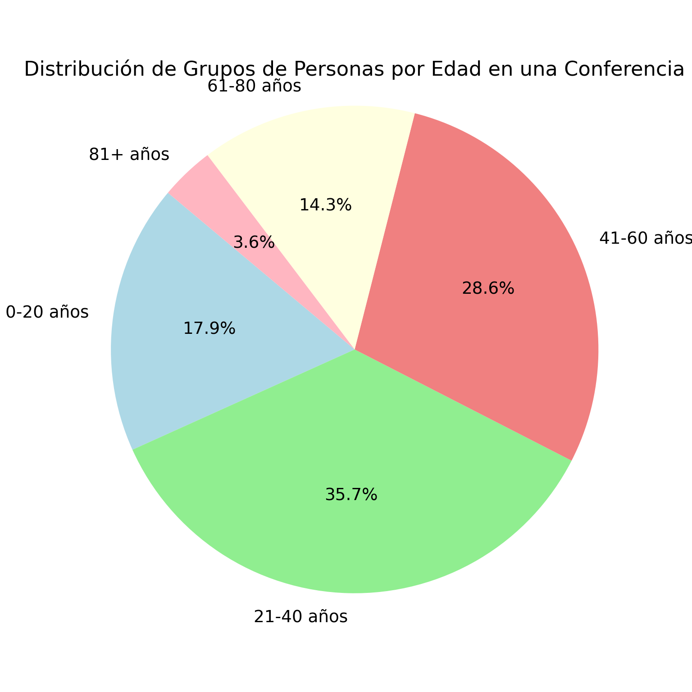
Para cambiar la paleta de colores se puede agregar la instrucción colors=plt.cm.Accent.colors, por ejemplo:
plt.pie(cantidad_personas, labels=edades, autopct='%1.1f%%', startangle=140, colors=plt.cm.Accent.colors)Ejercicio: Usando la base de datos penguins de seaborn, crea un gráfico de pastel que muestre la proporción de cada especie de pingüino en la base de datos.
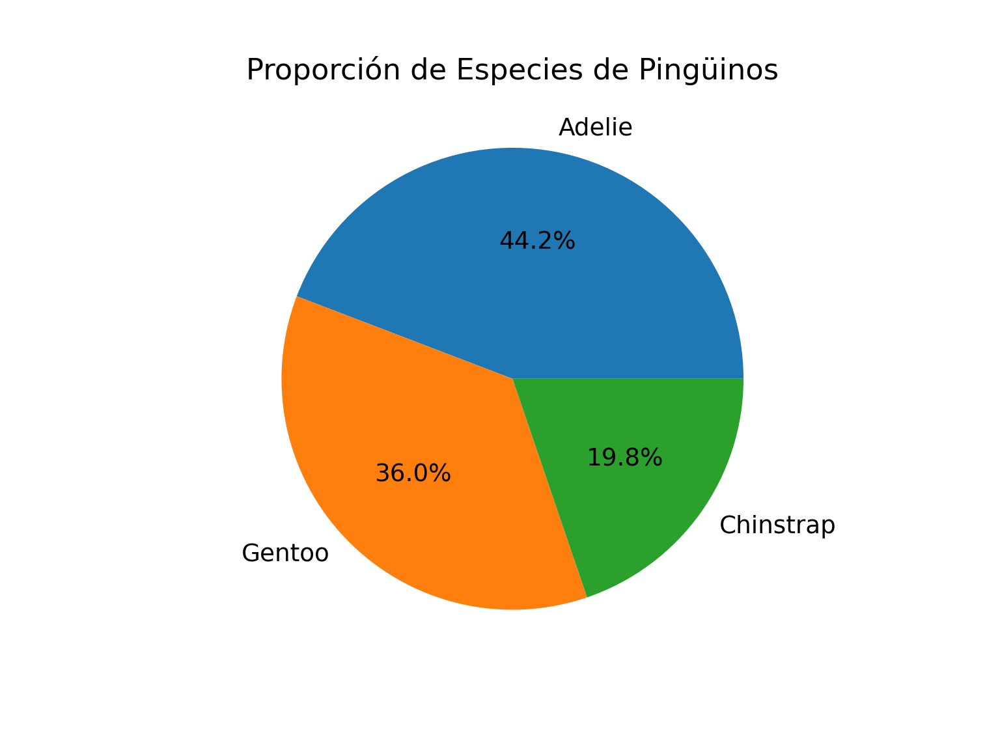
Nota: En este caso, seaborn no tiene una función para hacer gráficos de pastel, por lo tanto para hacerlo con matplotlib deben manipular la base de datos para obtener el recuento de cuantos pinguinos hay por especie, obtener los labels y los tamaños de estos subconjuntos. Una opción es usar la opción penguins['species'].value_counts() y después extraer los labels y tamaños.
4.8.2.5 Boxplot
# Cargamos los datos Iris
iris = sns.load_dataset('iris')
# Creamos el boxplot
plt.figure(figsize=(8, 6))
sns.boxplot(x='species', y='sepal_length', data=iris)
# Añadimos etiquetas y título
plt.xlabel('Especies')
plt.ylabel('Longitud del Sépalo')
plt.title('Boxplot de la longitud del Sépalo para cada especie')
# Mostramos el boxplot
plt.show()
Ejercicio: Usando la base de datos penguins de seaborn, crea un boxplot que compare las longitudes del pico para cada especie de pingüino en la base de datos.
Nota: matplotib no tiene la funcionalidad de eliminar los datos faltantes de una base de datos, si intentan hacer el plot directo con matplolib, para dos especies no va a salir el plot debido a que cuenta con datos faltantes. En seaborn se puede crear el plot usando sns.boxplot(data=, x=, y=). Para hacer el plot con matplotlib, primero se deben eliminar los NA, una forma es con:
penguins_clean = penguins.dropna(subset=['bill_length_mm'])
species = penguins_clean['species']
bill_length = penguins_clean['bill_length_mm']
# Paleta de colores
colors = sns.color_palette("colorblind")
# Crear el boxplot
plt.figure(figsize=(8, 6))
box = plt.boxplot([bill_length[species == 'Adelie'],
bill_length[species == 'Chinstrap'],
bill_length[species == 'Gentoo']],
labels=['Adelie', 'Chinstrap', 'Gentoo'],
patch_artist=True) # Para que los boxes sean de colores
# Iterar sobre cada caja y establecer el color
for patch, color in zip(box['boxes'], colors):
patch.set_facecolor(color)4.8.2.6 Histograma
# Cargar el conjunto de datos Iris
iris = sns.load_dataset('iris')
# Especie específica para la que queremos crear el histograma
especie = 'setosa'
# Filtrar los datos para la especie específica
datos_especie = iris[iris['species'] == especie]['sepal_length']
# Crear el histograma
plt.figure(figsize=(8, 6))
plt.hist(datos_especie, bins=10, color='skyblue', edgecolor='black', alpha=0.7)
# Añadir etiquetas y título
plt.xlabel('Longitud del Sépalo')
plt.ylabel('Frecuencia')
plt.title(f'Histograma de Longitud del Sépalo para la Especie {especie.capitalize()}')
# Mostrar el histograma
plt.show()Ejercicio: Usando la base de datos penguins de seaborn, crea un histograma que muestre la distribución de las longitudes del pico para todas las especies de pingüinos.
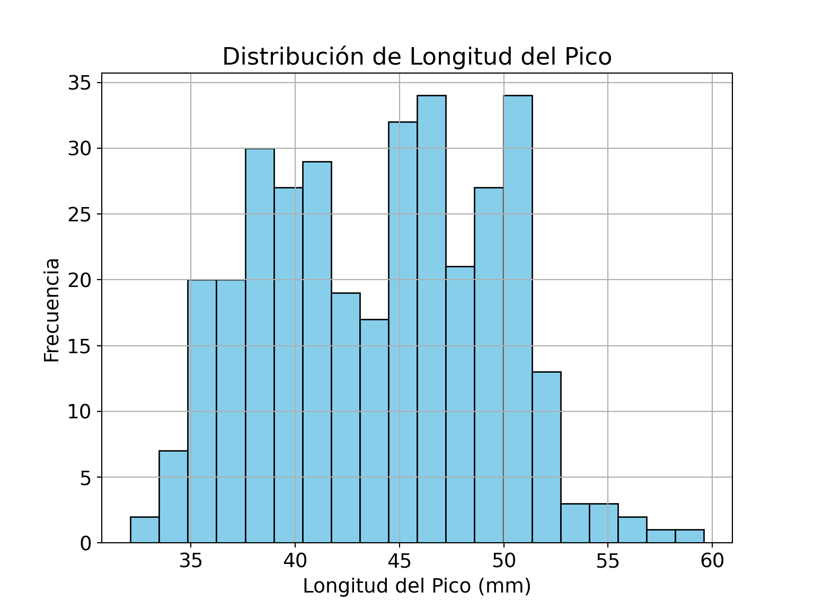
Nota: En seaborn el comando para realizar un histograma es sns.histplot(data=, x=, bins=n, kde=False, color=, edgecolor=).
4.8.2.7 Contour plot
# Creamos datos para el Contour Plot
x = np.linspace(-3, 3, 100)
y = np.linspace(-3, 3, 100)
X, Y = np.meshgrid(x, y)
Z = np.sin(X) * np.cos(Y)
# Creamos el Contour Plot
plt.figure(figsize=(8, 6))
contour = plt.contour(X, Y, Z, cmap='viridis')
# Etiquetamos las líneas de contorno
plt.clabel(contour, inline=True, fontsize=8)
# Añadimos etiquetas y título
plt.xlabel('Eje X')
plt.ylabel('Eje Y')
plt.title('Contour Plot de sin(X) * cos(Y) con Etiquetas')
# Mostramos el gráfico
plt.grid(True)
plt.show()4.8.2.8 Imshow
En Matplotlib, imshow() se utiliza para mostrar una imagen (2D o 3D) representada como una matriz. Toma como entrada una matriz 2D o 3D donde los valores representan intensidades de píxeles o valores de color.
# Creamos una matriz de ejemplo
data = np.random.rand(10, 10)
# Mostramos la matriz como una imagen utilizando imshow
plt.imshow(data, cmap='viridis')
# Añadimos una barra de color para mostrar la correspondencia entre valores y colores
plt.colorbar()## <matplotlib.colorbar.Colorbar object at 0x0000012D3DC19F50># Añadimos etiquetas y título
plt.xlabel('X')
plt.ylabel('Y')
plt.title('Imshow()')
# Mostramos la gráfica
plt.show()Se puede ocupar para hacer mapas de calor.
Ejercicio: Supongamos que tenemos la siguiente función:
\[ f(x, y) = \sin(x) \cdot \cos(y) \]
Generar una cuadrícula de valores para \(x\) y \(y\) en el rango de \([-2\pi, 2\pi]\).
Calcular los valores de la función \(f(x, y)\) para cada par de puntos \((x, y)\).
Visualizar la función utilizando
imshowpara mostrar la función como una imagen ycontourpara mostrar las curvas de nivel.Tu resultado debe ser similar al siguiente:
## <matplotlib.colorbar.Colorbar object at 0x0000012D3DC19E50>## <matplotlib.colorbar.Colorbar object at 0x0000012D3E6BE5D0>4.9 Data frames con pandas
Pandas es una de las bibliotecas más utilizadas en Python para la manipulación y análisis de datos. Uno de sus objetos principales es el DataFrame, que es una estructura de datos tabular similar a una hoja de cálculo de Excel.
Para instalarlo realizamos lo siguiente:
Luego, para importarlo
Un DataFrame se puede crear de varias formas. Aquí hay algunas de las más comunes:
- Desde un diccionario:
data = {'Nombre': ['Laura', 'Ximena', 'Cesar', 'David'],
'Edad': [25, 30, 35, 40],
'Ciudad': ['Morelia', 'CDMX', 'Xalapa', 'Toluca']}
df = pd.DataFrame(data)
print(df)## Nombre Edad Ciudad
## 0 Laura 25 Morelia
## 1 Ximena 30 CDMX
## 2 Cesar 35 Xalapa
## 3 David 40 Toluca- Desde una lista de listas:
data = [['Laura', 25, 'Morelia'],
['Ximena', 30, 'CDMX'],
['Cesar', 35, 'Xalapa'],
['David', 40, 'Toluca']]
df = pd.DataFrame(data, columns=['Nombre', 'Edad', 'Ciudad'])
print(df)## Nombre Edad Ciudad
## 0 Laura 25 Morelia
## 1 Ximena 30 CDMX
## 2 Cesar 35 Xalapa
## 3 David 40 Toluca- Desde un archivo CSV: Supongamos que tenemos un DataFrame llamado ‘data’, vamos a guardarlo como sigue:
# index=False evita que se escriba el índice del DataFrame en el archivo
df = pd.DataFrame(data, index = ['C1', 'C2', 'C3', 'C4'])Entonces, para leerlo:
Una vez que tenemos un DataFrame, podemos explorar los datos utilizando varias funciones y atributos:
# Obtener las primeras filas
print(df.head())
# Obtener las últimas filas
print(df.tail())
# Obtener información sobre el DataFrame
print(df.info())
# Obtener estadísticas descriptivas
print(df.describe())Para acceder y manipular los datos en un DataFrame, tenemos varias formas.
- Acceder a columnas:
data = {'Nombre': ['Laura', 'Ximena', 'Cesar', 'David'],
'Edad': [25, 30, 35, 40],
'Ciudad': ['Morelia', 'CDMX', 'Xalapa', 'Toluca']}
df = pd.DataFrame(data, index = ['C1', 'C2', 'C3', 'C4'])
# Acceder a una columna
print(df['Nombre'])
# Acceder a una columna
print(df['Nombre'])
# Acceder a múltiples columnas
print(df[['Nombre', 'Edad']])- Acceder a filas:
## 0 Laura
## 1 25
## 2 Morelia
## Name: C1, dtype: object## 0 1 2
## C2 Ximena 30 CDMX
## C3 Cesar 35 XalapaEn el caso de que nuestras filas tengan índice podemos realizar lo siguiente también:
## 0 Laura
## 1 25
## 2 Morelia
## Name: C1, dtype: object- Seleccionar subconjuntos (filas y columnas):
## 0 1
## C1 Laura 25
## C2 Ximena 30- Para añadir columnas:
## 0 1 2 Género
## C1 Laura 25 Morelia F
## C2 Ximena 30 CDMX M
## C3 Cesar 35 Xalapa M
## C4 David 40 Toluca M- Filtrar datos:
# Filtrar filas basadas en una condición
print(df[df['Edad'] > 30])
# Filtrar filas basadas en múltiples condiciones
print(df[(df['Edad'] > 30) & (df['Ciudad'] == 'CDMX')])- Ordenar datos:
# Ordenar DataFrame por una columna
print(df.sort_values(by='Edad'))
# Ordenar DataFrame en orden descendente
print(df.sort_values(by='Edad', ascending=False))Ejercicios:
- Crea un DataFrame con información sobre empleados, incluyendo Nombre, Edad y Salario. Muestra las primeras 5 filas.
- Añade una nueva columna llamada ‘Departamento’ al DataFrame de empleados.
- Encuentra el empleado más joven en el DataFrame.
- Filtra los empleados que tienen un salario mayor a $50000.
- Ordena los empleados por salario en orden descendente.
4.9.1 Funciones para manipular dataframes
Vamos a trabajar lo siguiente con la base de datos de pinguinos.
Primero, cargamos la base de datos ‘penguins’ de Seaborn:
- Agrupar por una columna y calcular la suma de otra columna:
## species
## Adelie 5857.5
## Chinstrap 3320.7
## Gentoo 5843.1
## Name: bill_length_mm, dtype: float64Aquí, estamos agrupando los datos por la columna ‘species’ y luego calculando la suma de los valores en la columna ‘bill_length_mm’ para cada grupo de especie. El resultado es una Serie que contiene la suma de las longitudes del pico para cada especie.
Podemos agrupar también por múltiples columnas en Pandas y luego aplicar funciones de agregación para obtener información sobre cada grupo. Para obtener el conteo de cada sexo por especie en la base de datos ‘penguins’:
# Agrupar por especie y sexo y contar el número de registros en cada grupo
conteos = penguins.groupby(['species', 'sex']).size()
conteos = penguins.groupby(['species', 'sex']).size().reset_index(name='conteo')
conteos## species sex conteo
## 0 Adelie Female 73
## 1 Adelie Male 73
## 2 Chinstrap Female 34
## 3 Chinstrap Male 34
## 4 Gentoo Female 58
## 5 Gentoo Male 61reset_index(name='conteo') se utiliza para renombrar la columna que contiene los conteos como ‘conteo’. La función size() en Pandas devuelve una Serie que contiene el tamaño de cada grupo en el objeto agrupado. Cuando se aplica a un DataFrame agrupado por una o más columnas, como en penguins.groupby([‘species’, ‘sex’]), size() cuenta el número de filas en cada grupo resultante.
- Agrupar por múltiples columnas y calcular la media de otra columna:
Esta línea agrupa los datos por las columnas ‘species’ y ‘island’ y luego calcula la media de los valores en la columna ‘bill_length_mm’ para cada combinación de especie e isla. El resultado es una Serie que contiene el promedio de las longitudes del pico para cada especie en cada isla.
- Calcular el máximo de una columna:
## 59.6- Calcular el mínimo de una columna:
## 32.1- Calcular el valor máximo de cada columna:
# seleccionamos solo las columnas numericas
maximos_por_columna = penguins[['bill_length_mm', 'bill_depth_mm', 'flipper_length_mm', 'body_mass_g']].max()
maximos_por_columna## bill_length_mm 59.6
## bill_depth_mm 21.5
## flipper_length_mm 231.0
## body_mass_g 6300.0
## dtype: float64- Calcular el valor mínimo de cada columna:
minimos_por_columna = penguins[['bill_length_mm', 'bill_depth_mm', 'flipper_length_mm', 'body_mass_g']].min()
minimos_por_columna## bill_length_mm 32.1
## bill_depth_mm 13.1
## flipper_length_mm 172.0
## body_mass_g 2700.0
## dtype: float64- Calcular la media de una columna:
## 43.9219298245614- Calcular la mediana de una columna:
## 44.45- Calcular la desviación estándar de una columna:
desviacion_estandar_longitud_pico = penguins['bill_length_mm'].std()
desviacion_estandar_longitud_pico## 5.459583713926532- Calcular el conteo de valores no nulos en una columna:
conteo_valores_no_nulos_longitud_pico = penguins['bill_length_mm'].count()
conteo_valores_no_nulos_longitud_pico## 342Estamos contando el número de valores no nulos en la columna ‘bill_length_mm’, que representa el número de registros en el DataFrame ‘penguins’ donde la longitud del pico está registrada.
- Obtener la forma del data frame:
## (344, 7)- Crear una nueva columna calculada a partir de columnas existentes: Supongamos que queremos calcular el índice de masa corporal (IMC) para cada pingüino en función de su peso (en kg) y su altura (en metros). Podemos agregar una nueva columna llamada ‘bmi’ que contenga el IMC calculado utilizando la fórmula IMC = peso / (altura\(^2\)).
# Calcular el índice de masa corporal (IMC)
penguins['bmi'] = penguins['body_mass_g'] / ((penguins['bill_length_mm'] / 100) ** 2)- Crear una nueva columna basada en condiciones: Podemos agregar una nueva columna llamada ‘is_adult’ que indique si un pingüino es adulto o no, basado en si su edad es mayor o igual a 2 años.
- Crear una nueva columna combinando valores de otras columnas: Podemos combinar el nombre de la especie y el sexo para crear una nueva columna llamada ‘species_sex’.
# Crear una nueva columna 'species_sex'
penguins['species_sex'] = penguins['species'] + '_' + penguins['sex']- Crear una nueva columna utilizando el método
assign: Podemos usar el métodoassignpara agregar múltiples columnas de una vez, calculadas a partir de columnas existentes.
# Agregar nuevas columnas usando el método 'assign'
penguins = penguins.assign(
bill_ratio = penguins['bill_length_mm'] / penguins['bill_depth_mm'],
flipper_ratio = penguins['flipper_length_mm'] / penguins['bill_length_mm']
)Extra) Crear una nueva columna utilizando una función personalizada: Podemos definir una función personalizada para asignar una categoría de tamaño de pingüino (pequeño, mediano, grande) en función de su peso y usarla para crear una nueva columna llamada ‘size_category’.
4.9.2 pivot y pivot_table
pivot y pivot_table son dos métodos en Pandas que te permiten reorganizar y resumir datos en un DataFrame. Estos métodos son útiles para transformar la estructura de tus datos para un análisis más conveniente y presentación visual.
1)pivot: El método pivot te permite reorganizar datos en función de los valores de las columnas.
# Crear un DataFrame de ejemplo
data = {
'fecha': ['2022-01-01', '2022-01-01', '2022-01-02', '2022-01-02'],
'ciudad': ['A', 'B', 'A', 'B'],
'temperatura': [25, 28, 23, 26]
}
df = pd.DataFrame(data)
print(df)## fecha ciudad temperatura
## 0 2022-01-01 A 25
## 1 2022-01-01 B 28
## 2 2022-01-02 A 23
## 3 2022-01-02 B 26# Usar pivot para reorganizar los datos
pivot_df = df.pivot(index='fecha', columns='ciudad', values='temperatura')
print(pivot_df)## ciudad A B
## fecha
## 2022-01-01 25 28
## 2022-01-02 23 262). pivot_table: El método pivot_table es similar a pivot, pero te permite agregar y resumir datos.
df2 = pd.DataFrame({"A": ["foo", "foo", "foo", "foo", "foo",
"bar", "bar", "bar", "bar"],
"B": ["one", "one", "one", "two", "two",
"one", "one", "two", "two"],
"C": ["small", "large", "large", "small",
"small", "large", "small", "small",
"large"],
"D": [1, 2, 2, 3, 3, 4, 5, 6, 7],
"E": [2, 4, 5, 5, 6, 6, 8, 9, 9]})
print(df2)
# Usar pivot_table para calcular el promedio de temperatura por ciudad
pivot_table_df = df2.pivot_table(df2, values='D', index=['A', 'B'],
columns=['C'], aggfunc="sum")
print(pivot_table_df)En este ejemplo, además de reorganizar los datos, estamos calculando la suma.
Ejercicio 1:
Carga el conjunto de datos ‘titanic’ de Seaborn y utiliza pivot para reorganizar los datos de manera que las filas representen la clase de pasajeros y las columnas representen el sexo de los pasajeros, con los valores siendo la tarifa media pagada por cada grupo.
Ejercicio 2:
Utiliza pivot_table para calcular la cantidad total de sobrevivientes agrupados por clase y género en el conjunto de datos ‘titanic’.
4.9.3 Plots en pandas
# Crear un DataFrame de ejemplo
data = pd.DataFrame({
'A': np.random.randn(100),
'B': np.random.rand(100) * 100,
'C': np.random.randint(1, 5, size=100),
'D': np.random.choice(['X', 'Y', 'Z'], size=100)
})# Gráfico de línea
data.plot(kind='line', figsize=(10, 6))
plt.title('Gráfico de Línea')
plt.xlabel('Índice')
plt.ylabel('Valores')
plt.show()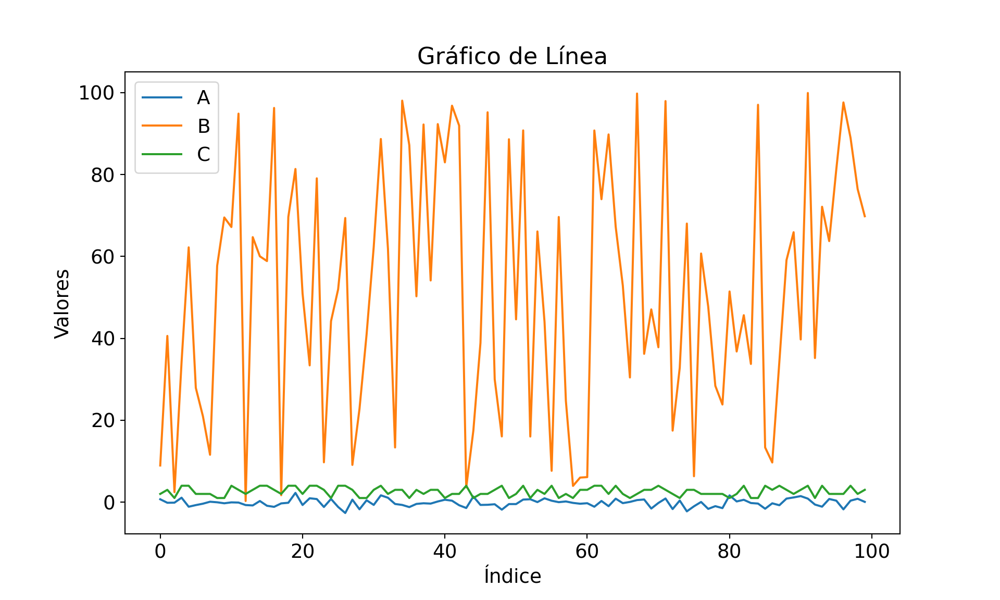
# Gráfico de barras verticales
data['C'].value_counts().sort_index().plot(kind='bar', figsize=(10, 6))
plt.title('Gráfico de Barras Verticales')
plt.xlabel('Valores')
plt.ylabel('Frecuencia')
plt.show()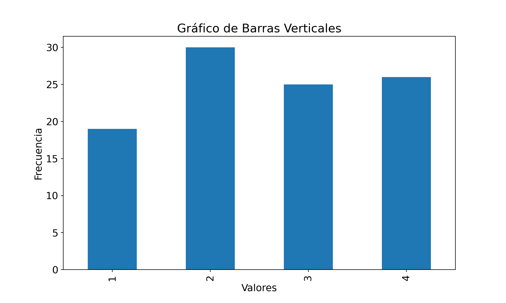
# Gráfico de barras horizontales
data['D'].value_counts().plot(kind='barh', figsize=(10, 6))
plt.title('Gráfico de Barras Horizontales')
plt.xlabel('Frecuencia')
plt.ylabel('Valores')
plt.show()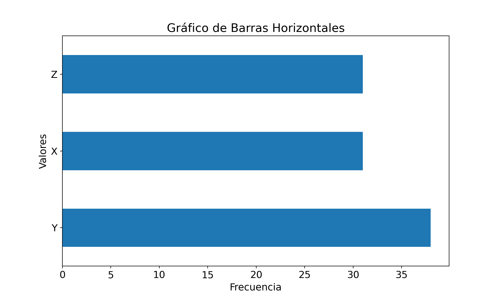
# Histograma
data['A'].plot(kind='hist', bins=20, figsize=(10, 6))
plt.title('Histograma')
plt.xlabel('Valores')
plt.ylabel('Frecuencia')
plt.show()
# Diagrama de caja (boxplot)
data[['A', 'B']].plot(kind='box', figsize=(10, 6))
plt.title('Diagrama de Caja')
plt.ylabel('Valores')
plt.show()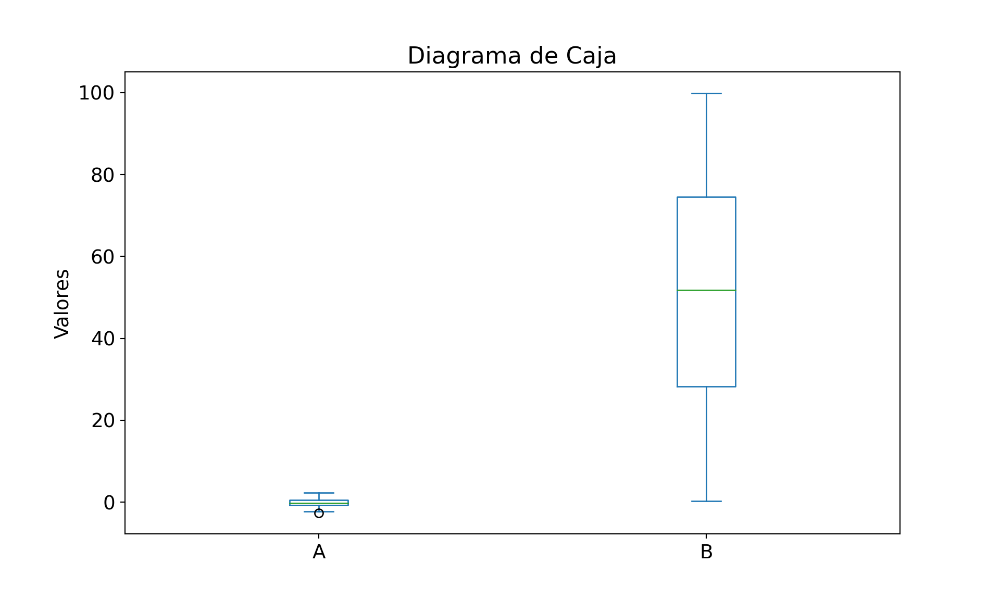
# Estimación de densidad de kernel (KDE)
data['B'].plot(kind='kde', figsize=(10, 6))
plt.title('Estimación de Densidad de Kernel (KDE)')
plt.xlabel('Valores')
plt.ylabel('Densidad')
plt.show()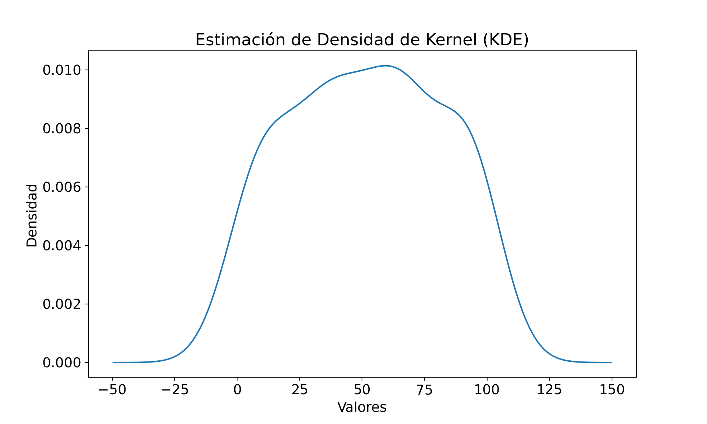
# Histograma de densidad
data['B'].plot(kind='density', figsize=(10, 6))
plt.title('Histograma de Densidad')
plt.xlabel('Valores')
plt.ylabel('Densidad')
plt.show()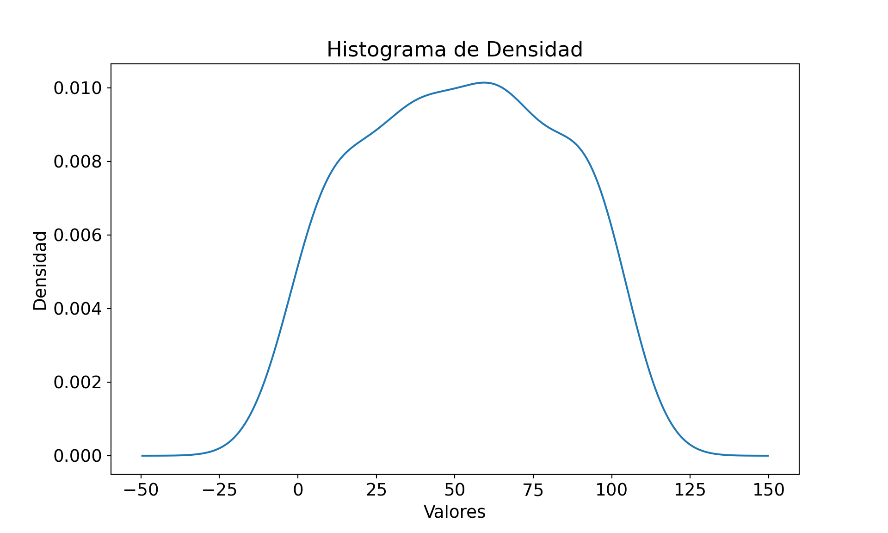
# Asegurarnos de que los valores sean no negativos
data_non_negative = data[['A', 'B']].clip(lower=0)
# Gráfico de área
data_non_negative.plot(kind='area', stacked=False, figsize=(10, 6))
plt.title('Gráfico de Área')
plt.xlabel('Índice')
plt.ylabel('Valores')
plt.show()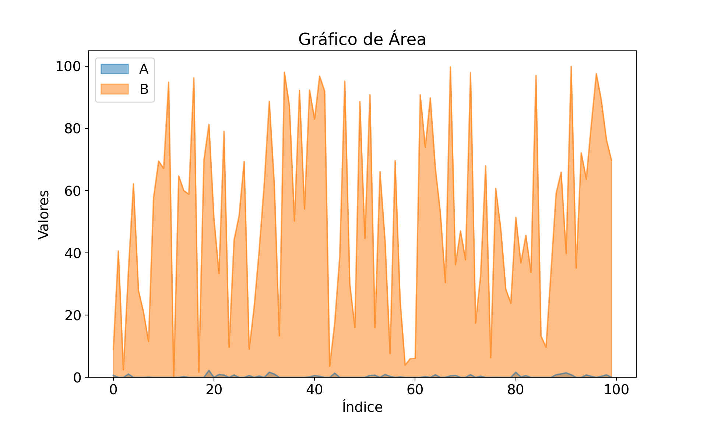
# Gráfico de dispersión
data.plot(kind='scatter', x='A', y='B', figsize=(10, 6))
plt.title('Gráfico de Dispersión')
plt.xlabel('A')
plt.ylabel('B')
plt.show()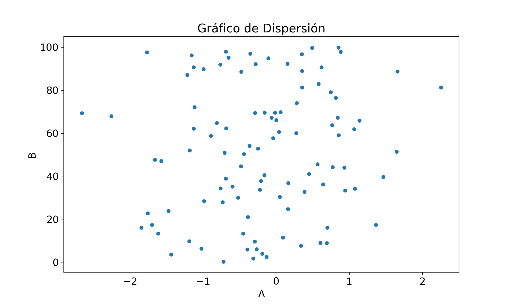
4.11 Funciones y scripts
4.11.1 Funciones
Las funciones son bloques de código que realizan una tarea específica y pueden ser reutilizadas en múltiples partes de un programa. En Python, las funciones se definen utilizando la palabra clave def.
## Hola, RobertaLas funciones pueden aceptar parámetros, que son valores que la función espera recibir cuando es llamada. Los valores pasados a una función se llaman argumentos. Existen argumentos que se pueden dejar por default u opcionales.
## La suma es: 467Se pueden definir valores predeterminados para los argumentos de una función en Python. Estos valores se utilizarán si el usuario no proporciona un valor específico para el argumento al llamar a la función. Sin embargo, el usuario puede sobrescribir el valor predeterminado proporcionando un valor diferente al llamar a la función.
def saludar(nombre="usuario"):
print("Hola,", nombre)
# Llamada a la función sin argumentos
saludar() # Salida: Hola, usuario## Hola, usuario## Hola, RobertaTambién se pueden definir argumentos opcionales en Python utilizando el valor None como un valor predeterminado para el argumento. Luego, dentro de la función, puedes verificar si se ha proporcionado un valor para ese argumento y actuar en consecuencia.
def saludar(nombre=None):
if nombre is None:
print("Hola, ¿cómo estás?")
else:
print("Hola,", nombre)
# Llamada a la función sin argumentos
saludar() # Salida: Hola, ¿cómo estás?## Hola, ¿cómo estás?## Hola, RobertaUn punto a tener en cuenta cuando se escriben funciones es que las variables que se definen dentro de una función solo se conocen dentro de la función. Por ejemplo:
Otro punto importante a la hora de realizar funciones es la documentación.
def boxplot_especie(data, especie, variable):
"""
Crea un boxplot para una especie específica en un conjunto de datos,
utilizando una variable específica.
Parámetros:
- data: DataFrame, el conjunto de datos que contiene la información.
- especie: str, la especie para la cual se desea generar el boxplot.
- variable: str, la variable numérica para la cual se desea generar el boxplot.
Si la columna 'species' está presente en el DataFrame 'data', la función
genera un boxplot para la especie especificada utilizando la variable numérica
especificada. De lo contrario, imprime un mensaje indicando que no se pudo
determinar el tipo de base de datos.
Si la especie o la variable no se encuentran en los datos, la función imprime
un mensaje indicando que no se pudo encontrar la especie o la variable.
Ejemplos de uso:
- boxplot_especie(iris_data, 'setosa', 'petal_length')
- boxplot_especie(penguins_data, 'Adelie', 'flipper_length_mm')
"""
# Verificar si existe la columna 'species'
if 'species' in data.columns:
especies_disponibles = data['species'].unique()
if especie not in especies_disponibles:
print(f"Especie '{especie}' no encontrada en la base de datos.")
return
# Verificar si la variable especificada está disponible
if variable not in data.columns:
print(f"Variable '{variable}' no encontrada en la base de datos.")
return
# Crear el boxplot
sns.boxplot(x='species', y=variable, data=data[data['species'] == especie])
plt.xlabel('Especie')
plt.ylabel(f'{variable}')
plt.title(f'Boxplot de la variable {variable} para la especie {especie}')
else:
print("No se pudo determinar el tipo de base de datos.")
return
plt.show()# Ejemplo de uso con la base de datos Iris
iris_data = sns.load_dataset('iris')
boxplot_especie(iris_data, 'setosa', 'petal_lengt')## Variable 'petal_lengt' no encontrada en la base de datos.# Ejemplo de uso con la base de datos Penguins
penguins_data = sns.load_dataset('penguins')
boxplot_especie(penguins_data, 'Adele', 'flipper_length_mm')## Especie 'Adele' no encontrada en la base de datos.Una vez que tenemos funciones, podemos automatizar procesos. De esta forma hacemos que nuestro código sea más eficiente y menos propenso a errores. Esto es especialmente útil cuando tenemos un gran número de especies o cuando trabajamos con conjuntos de datos más grandes en los que escribir llamadas individuales a funciones para cada observación sería tedioso y propenso a errores.
# Cargar la base de datos Iris
iris_data = sns.load_dataset('iris')
# Obtener las especies únicas en la base de datos
especies_unicas = iris_data['species'].unique()
# Generar boxplots para cada especie en un bucle for
for especie in especies_unicas:
boxplot_especie(iris_data, especie, 'petal_length')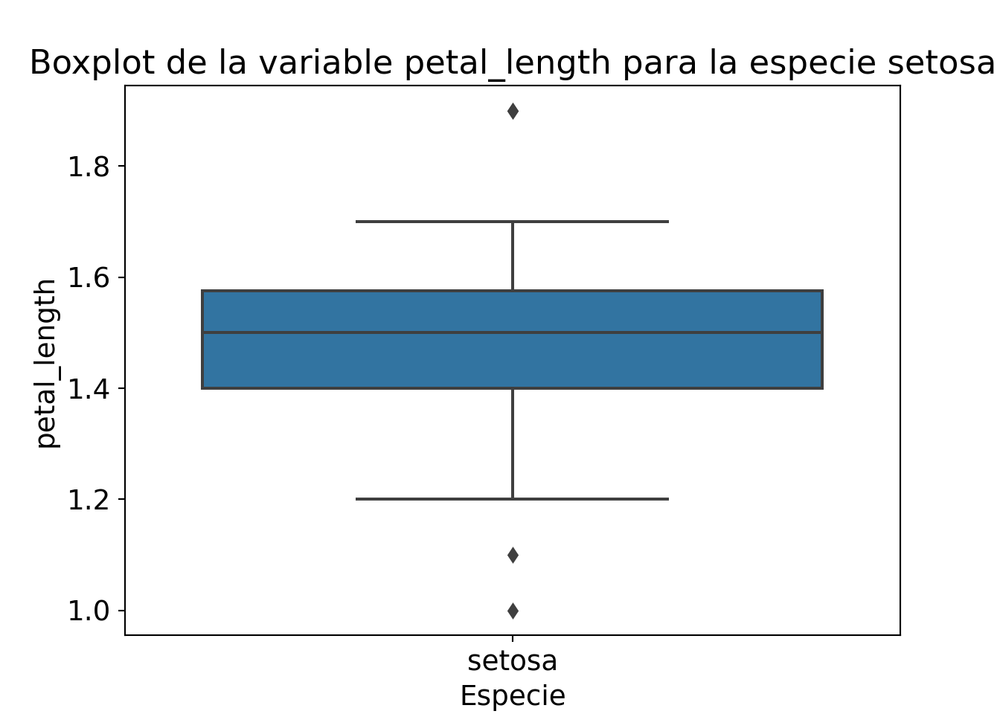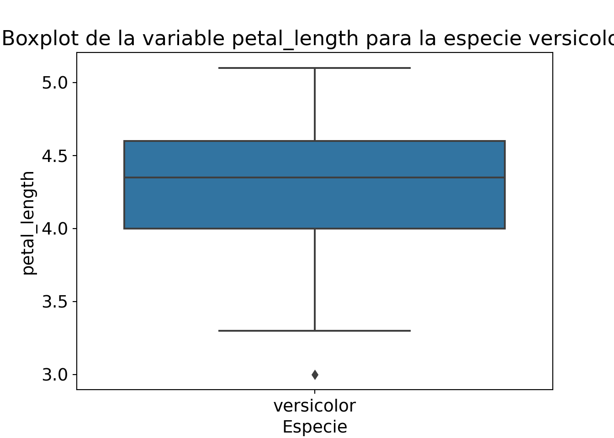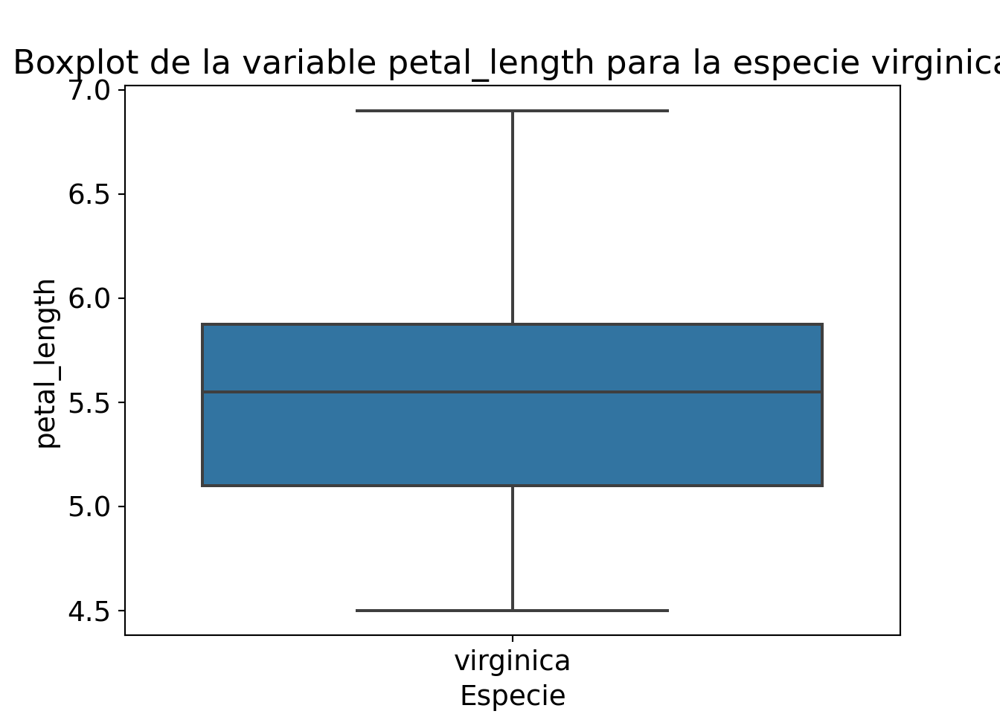
Cuando estamos realizando funciones, es importante que sean funciones legibles, usar nombres descriptivos, documentarlas, etc. Por ejemplo:
import math
def desv(val):
me = sum(val) / len(val)
s = sum((x - me) ** 2 for x in val)
v = s / len(val)
d = math.sqrt(v)
return d
# Ejemplo de uso
v = [2, 4, 4, 4, 5, 5, 7, 9]
print("Desviación estándar:", desv(v))## Desviación estándar: 2.0Esa misma función pero legible:
import math
def calcular_desviacion_estandar(valores):
"""
Calcula la desviación estándar de una lista de valores.
Parámetros:
- valores: list[float], una lista de valores numéricos.
Retorna:
- float, la desviación estándar de los valores.
"""
# Calcular la media de los valores
media = sum(valores) / len(valores)
# Calcular la suma de los cuadrados de las diferencias entre cada valor y la media
suma_cuadrados_diferencias = sum((x - media) ** 2 for x in valores)
# Calcular la varianza
varianza = suma_cuadrados_diferencias / len(valores)
# Calcular la desviación estándar como la raíz cuadrada de la varianza
desviacion_estandar = math.sqrt(varianza)
return desviacion_estandar
# Ejemplo de uso
valores = [2, 4, 4, 4, 5, 5, 7, 9]
print("Desviación estándar:", calcular_desviacion_estandar(valores))## Desviación estándar: 2.0Existen diferentes formas de obtener resultados de una función.
print: es una función incorporada en Python que se utiliza para mostrar información en la consola o en la salida estándar. Cuando llamas aprintdentro de una función, la información se imprime en la consola pero no se devuelve al código que llamó a la función.printes útil para la depuración y la visualización de datos, pero no proporciona un valor específico que pueda ser utilizado por otras partes del programa. Por ejemplo:
## Hola, RobertaEn este ejemplo, la función saludar imprime un saludo utilizando print, pero no devuelve ningún valor. La salida se muestra en la consola, pero no se asigna a ninguna variable ni se utiliza más adelante en el programa.
return: es una palabra clave en Python que se utiliza para devolver un valor específico desde una función al código que la llamó. Cuando una función utilizareturn, termina la ejecución de la función y devuelve el valor especificado al lugar donde se llamó la función. Esto permite utilizar el resultado de la función en otras partes del programa. Por ejemplo:
## 8En este ejemplo, la función sumar devuelve la suma de dos números utilizando return. El valor devuelto (la suma de los números) se asigna a la variable resultado y luego se imprime en la consola.
La diferencia principal entre print y return es que print muestra información en la consola pero no devuelve ningún valor, mientras que return devuelve un valor específico desde una función para que pueda ser utilizado por otras partes del programa.
Ejercicios:
4.11.2 Scripts
Un script en Python es un archivo que contiene código Python que puede ser ejecutado. Los scripts nos permiten organizar nuestro código en archivos separados y reutilizables.
Supongamos que queremos crear un script que salude a un usuario con su nombre. Podemos escribir el siguiente código en un archivo llamado saludo.py:
# Contenido del archivo saludo.py
def saludar(nombre):
print("Hola,", nombre)
nombre_usuario = input("Por favor, ingresa tu nombre: ")
saludar(nombre_usuario)Para ejecutar este script, podemos abrir una terminal, navegar hasta la ubicación del archivo saludo.py y ejecutar el siguiente comando:
4.11.3 Test
Una vez que tenemos funciones, también queremos realizar tests para ver si están realizando correctamente lo que queremos las funciones. Una opción es la siguiente:
# Test para verificar la función sumar
def test_sumar():
# Verificar suma de números positivos
resultado = sumar(3, 5)
assert resultado == 8, f"La suma de 3 y 5 debería ser 8, pero obtuvimos {resultado}"
# Verificar suma de números negativos
resultado = sumar(-3, -5)
assert resultado == -8, f"La suma de -3 y -5 debería ser -8, pero obtuvimos {resultado}"
# Verificar suma de un número positivo y otro negativo
resultado = sumar(3, -5)
assert resultado == -2, f"La suma de 3 y -5 debería ser -2, pero obtuvimos {resultado}"
# Ejecutar el test
test_sumar()# Test para verificar la función sumar
def test_sumar_incorrecto():
# Verificar suma de números positivos
resultado = sumar(3, 5)
assert resultado == 7, f"La suma de 3 y 5 debería ser 8, pero obtuvimos {resultado}"
# Verificar suma de números negativos
resultado = sumar(-3, -5)
assert resultado == -8, f"La suma de -3 y -5 debería ser -8, pero obtuvimos {resultado}"
# Verificar suma de un número positivo y otro negativo
resultado = sumar(3, -5)
assert resultado == -2, f"La suma de 3 y -5 debería ser -2, pero obtuvimos {resultado}"
# Ejecutar el test
test_sumar_incorrecto()Como no obtenemos ningún error quiere decir que se cumplieron todos los test. Modifiquemos uno de los resultados para ver que sucede cuando no se cumple el test.
Dos paquetes que nos ayudan a realizar test son unittest y pytest. En pytest, cada función a realizarle un test debe llevar el nombre test_funcion. Cada test verifica una solo característica de nuestro código y revisa usando assert.
Vamos a crear un script en python llamado test_suma.py, en el vamos a escribir la función suma que teníamos y los test que escribimos anteriormente:
# Script.py
def sumar(a, b):
return a + b
def test_sumar():
# Verificar suma de números positivos
resultado = sumar(3, 5)
assert resultado == 8, f"La suma de 3 y 5 debería ser 8, pero obtuvimos {resultado}"
# Verificar suma de números negativos
resultado = sumar(-3, -5)
assert resultado == -8, f"La suma de -3 y -5 debería ser -8, pero obtuvimos {resultado}"
# Verificar suma de un número positivo y otro negativo
resultado = sumar(3, -5)
assert resultado == -2, f"La suma de 3 y -5 debería ser -2, pero obtuvimos {resultado}"Para correrlo, vamos a abrir una terminal y vamos a ejecutar:
Ejercicio 1: Crea un test que verifique dos funciones, una de aritmética básica (igualdad entre dos números y multiplicación entre dos números) y la otra función la longitud de elementos de una lista. Realiza el test de ambas funciones con pytest.
Ejercicio 2: Crea un archivo nuevo para hacer test llamado test_prueba. Realiza una función prueba que verifique que 1+2 es 3. Realiza el test. Ahora prueba con 1.1+2.2 es 3.3, usa pytest.
Con los números flotantes debemos tener cuidado al realizar los test. Una forma de corregir el error que tuvimos es la siguiente.
Otra forma es controlando la tolerancia absoluta:
Y la relativa:
En el siguiente repositorio, se encuentra un muy buen manual de como realizar test con diferentes opciones link.
4.12 Buenas practicas
- Sigue las convenciones de estilo de código:
- Utiliza PEP 8 como guía para escribir código Python limpio y legible.
- Usa nombres de variables descriptivos y significativos.
- Usa espacios en blanco de manera consistente para mejorar la legibilidad.
- Comenta tu código:
- Utiliza comentarios para explicar el propósito y la funcionalidad de tu código.
- Documenta tus funciones utilizando cadenas de documentación (docstrings) para describir lo que hacen, los parámetros que reciben y lo que devuelven.
- Escribir funciones y módulos reutilizables:
- Divide tu código en funciones y módulos pequeños y reutilizables.
- Evita la repetición de código escribiendo funciones para realizar tareas comunes.
- Manejo adecuado de excepciones:
- Utiliza bloques try-except para manejar excepciones de manera adecuada y evitar que tu programa se bloquee.
- Especifica claramente qué excepciones estás capturando y maneja las excepciones de manera apropiada.
- Optimiza tu código:
- Utiliza la biblioteca estándar de Python y módulos externos cuando sea posible en lugar de reinventar la rueda.
- Aprende y utiliza algoritmos y estructuras de datos eficientes para optimizar el rendimiento de tu código.
- Escribe pruebas unitarias:
- Escribe pruebas unitarias para verificar que tu código funcione correctamente en diferentes casos de uso.
- Utiliza marcos de prueba como
unittestopytestpara escribir y ejecutar tus pruebas.
- Mantén tu código limpio:
- Elimina el código muerto y no utilizado para mantener tu código limpio y fácil de entender.
- Refactoriza tu código cuando sea necesario para mejorar su estructura y claridad.
- Usa control de versiones:
- Utiliza un sistema de control de versiones como Git para gestionar y realizar un seguimiento de los cambios en tu código.
- Utiliza ramas y etiquetas para organizar tu trabajo y colaborar con otros desarrolladores de manera efectiva.
- Aprende continuamente:
- Mantente al tanto de las mejores prácticas y las novedades en el mundo de Python.
- Aprende de otros desarrolladores y contribuye a la comunidad de código abierto.
4.13 Procesamiento de alto rendimiento
Numba es una biblioteca de Python que te permite acelerar el rendimiento de tu código mediante la compilación de funciones de Python en código máquina optimizado para CPU o GPU.
Numba proporciona varios decoradores que puedes usar para optimizar tus funciones de Python. Dos de los más comunes son @jit y @njit. @jit (Just-In-Time) compila la función justo antes de ejecutarla, mientras que @njit (Numba JIT) compila la función antes de su primera llamada y la reutiliza en llamadas posteriores.
Nota: Basado en link
Para usar numba, solo se necesita agregar los decoradores. Por ejemplo, supongamos que tenemos la siguiente función que integra.
import numpy as np
import numba
def integrate(a, b, n):
s = 0.0
dx = (b - a) / n
for i in range(n):
x = a + (i + 0.5) * dx
y = x ** 4 - 3 * x
s += y * dx
return sSi la ejecutamos:
Vemos el tiempo que se lleva en compilarla.
Ahora, hagamos una prueba con numba.
@numba.njit
def numba_integrate(a, b, n):
s = 0.0
dx = (b - a) / n
for i in range(n):
x = a + (i + 0.5) * dx
y = x ** 4 - 3 * x
s += y * dx
return sEl decorador hará que la función corra sin necesidad del interprete. Verifiquemos el tiempo de ejecución.
Realizamos una aserción para verificar que ambos resultados son casi iguales:
Calculamos la relación de aceleración comparando los mejores tiempos de ejecución entre la versión original y la versión compilada con Numba:
Cuando decoras una función con @numba.njit, Numba compila la función justo antes de su ejecución. Durante esta compilación, Numba analiza el código de la función y genera un código máquina optimizado para los tipos de datos de los argumentos que se le pasan en esa llamada específica. Esta compilación puede llevar tiempo, especialmente para funciones complejas o con tipos de datos complicados.
Una vez que la función ha sido compilada para un conjunto particular de tipos de datos, Numba almacena en caché el código máquina generado. Esto significa que si la función se llama nuevamente con los mismos tipos de datos, Numba puede reutilizar el código máquina en lugar de tener que compilar la función nuevamente. Esto generalmente resulta en una ejecución mucho más rápida, ya que no se requiere el tiempo de compilación en ese punto.
@numba.njit
def numba_integrate(a, b, n):
s = 0.0
dx = (b - a) / n
for i in range(n):
x = a + (i + 0.5) * dx
y = x ** 4 - 3 * x
s += y * dx
return s
# Tiempo de compilación!
start = time.perf_counter()
numba_integrate(a, b, n)
end = time.perf_counter()
print("Tiempo (con compilación) = %0.5fs" %(end - start))
# Re-ejecutar con la versión ya compilada
start = time.perf_counter()
numba_integrate(a, b, n)
end = time.perf_counter()
print("Tiempo (después de compilación) = %0.5fs" %(end - start))
# FUnción original
start = time.perf_counter()
integrate(a, b, n)
end = time.perf_counter()
print("Tiempo (sin numba) = %0.5fs" %(end - start))¿Cuándo usar Numba?
Funciones con bucles: Numba es especialmente efectivo para optimizar funciones que contienen bucles, ya que puede compilar estos bucles en código de bajo nivel que se ejecuta rápidamente en la CPU o en la GPU.
Funciones con operaciones matemáticas: Si tu código realiza muchas operaciones matemáticas, como sumas, multiplicaciones, exponenciaciones, etc., Numba puede mejorar significativamente su rendimiento al compilar estas operaciones en código máquina optimizado.
Funciones que utilizan NumPy: Numba se integra bien con NumPy y puede mejorar el rendimiento de las funciones que utilizan arrays NumPy. Puede optimizar las operaciones vectorizadas y las funciones de NumPy para que se ejecuten más rápido.
Adecuado para: tuplas, cadenas de texto: Numba puede ser utilizado de manera efectiva en funciones que operan con tuplas y cadenas de texto, ya que puede optimizar las operaciones sobre estos tipos de datos.
No tan adecuado para: objetos, listas de Python, diccionarios de Python: Numba no es tan efectivo en optimizar el rendimiento de funciones que operan con objetos de Python, listas de Python y diccionarios de Python. Esto se debe a que estos tipos de datos son dinámicos y pueden cambiar de tipo durante la ejecución, lo que hace más difícil para Numba aplicar optimizaciones.
4.14 Programación en paralelo
Paralelizar en Python significa ejecutar múltiples tareas simultáneamente, aprovechando así los recursos de hardware, como múltiples núcleos de CPU, para acelerar el procesamiento. Esto se logra dividiendo una tarea en partes más pequeñas y ejecutándolas de forma concurrente en varios procesos o hilos.
Imagina que estás organizando una cena en tu casa y tienes que cocinar varios platos al mismo tiempo para satisfacer los gustos de todos tus invitados. En este contexto, la cocina y la computadora están relacionadas a través de analogías con conceptos clave de la informática:
Proceso: Un proceso es una instancia de un programa que se está ejecutando en la computadora. En el contexto de la cocina, podríamos pensar en un proceso como una receta específica que se está preparando en la cocina. Cada receta (proceso) tiene sus propios ingredientes y pasos de preparación. Así como en la cocina, donde puedes tener varias recetas siendo preparadas al mismo tiempo en diferentes estaciones, en la computadora puedes tener varios procesos ejecutándose simultáneamente.
Hilo: Un hilo es una unidad de computación que se envía a la CPU para su ejecución. En el contexto de la cocina, podríamos comparar un hilo con un chef o un ayudante que realiza una tarea específica dentro de un proceso (receta). Al igual que en una cocina ocupada donde varios chefs y ayudantes trabajan en diferentes tareas al mismo tiempo para preparar una comida completa, en una computadora, varios hilos pueden ejecutarse simultáneamente para completar diferentes partes de un proceso.
Número de núcleos: El número de núcleos en una CPU representa la cantidad de unidades independientes que pueden ejecutar hilos simultáneamente. En el contexto de la cocina, podríamos comparar los núcleos con las estaciones de trabajo en una cocina profesional. Cuantos más núcleos tenga una CPU, más hilos podrán ejecutarse simultáneamente, lo que permite una mayor paralelización y un rendimiento general más rápido.
Memoria: La memoria de la computadora es donde se almacenan y actualizan los datos y variables durante la ejecución de un programa. En la cocina, podríamos pensar en la memoria como el espacio de trabajo donde se colocan los ingredientes, utensilios y platos durante la preparación de una receta. Al igual que una cocina bien organizada facilita el acceso rápido a los ingredientes y utensilios necesarios para preparar una receta, una gestión eficiente de la memoria en la computadora asegura un acceso rápido y eficiente a los datos necesarios para ejecutar un programa.
En este ejemplo de cocina, los “workstations” (cores) representan los núcleos de la CPU, y los “sous chefs” (threads) representan los hilos de ejecución. La tarea de “hacer salsa” implica realizar sub-tareas, una de las cuales es contar todos los tomates en la despensa, tomar \(n\) tomates para la salsa y comunicarle al Chef cuántos tomates quedan en la despensa.
Ahora, supongamos que dos “sous chefs” están haciendo salsa y ejecutan sus tareas al mismo tiempo. Ambos necesitan contar los tomates en la despensa, tomar algunos para la salsa y actualizar la cantidad restante de tomates en la despensa. Aquí es donde surge el problema debido al GIL (Global Interpreter Lock).
El GIL es un mecanismo de protección en el intérprete de Python que evita que múltiples hilos ejecuten código de Python simultáneamente. Esto significa que, aunque tengamos múltiples hilos, solo uno puede ejecutar código Python a la vez. En el ejemplo de la cocina, esto se traduce en que, incluso si tenemos múltiples “sous chefs” (hilos) trabajando simultáneamente, solo uno puede contar los tomates a la vez debido al GIL.
Si dos “sous chefs” ejecutan sus tareas de contar tomates al mismo tiempo, pueden ocurrir problemas. Por ejemplo, si un “sous chef” cuenta 10 tomates y luego otro “sous chef” cuenta los mismos 10 tomates, ambos toman 10 tomates para la salsa, pero ambos informan al Chef que solo quedan 9 tomates en la despensa, lo que es incorrecto.
En resumen, en este ejemplo, el GIL en Python puede causar problemas de concurrencia al permitir que múltiples hilos accedan a recursos compartidos al mismo tiempo, lo que puede llevar a resultados incorrectos o inesperados.
Estos conceptos se traducen en el multiprocesamiento y el GIL en Python:
- Multiprocesamiento:
- El multiprocesamiento sería como tener varias estufas y hornos en tu cocina. Puedes cocinar diferentes platos simultáneamente en cada uno de ellos sin interferir entre sí. Por ejemplo, puedes cocinar la carne en una estufa, las verduras en otra y el postre en el horno, todo al mismo tiempo.
- Cada estufa u horno representa un proceso independiente en el sistema, y como están separados, no se afectan entre sí. Del mismo modo, cada proceso en Python tiene su propio espacio de memoria y puede ejecutarse de forma independiente de otros procesos.
- Global Interpreter Lock (GIL):
- El GIL sería como tener un solo juego de utensilios de cocina que todos los cocineros tienen que compartir. Solo un cocinero puede usar los utensilios en un momento dado, por lo que aunque tengas múltiples estufas y hornos, solo puedes trabajar en una tarea a la vez.
- Esto significa que, incluso si tienes múltiples procesos (o cocineros) ejecutándose, solo uno puede ejecutar código Python en un momento dado debido al GIL. Al igual que con los utensilios de cocina, los hilos (o procesos) deben competir por el acceso al GIL para ejecutar su código Python, lo que puede ralentizar el progreso general de las tareas.
En resumen, el multiprocesamiento te permite ejecutar múltiples tareas simultáneamente, cada una en su propio “espacio de cocina”, mientras que el GIL actúa como un conjunto compartido de utensilios de cocina que limita la capacidad de ejecución paralela en Python, aunque tengas múltiples procesos o hilos.
Una función de orden superior de Python es map(), que pertenece al conjunto de funciones de programación funcional. No es específicamente parte de un paquete, sino una función integrada en el lenguaje Python.
La función map() toma una función y un iterable (como una lista) como argumentos y aplica la función a cada elemento del iterable, devolviendo un objeto map que contiene los resultados.
Un ejemplo básico de cómo se usa map():
import time
# Definimos una función que toma un número y devuelve su cuadrado
def cuadrado(x):
return x ** 2
# Creamos una lista de números
numeros = [1, 2, 3, 4, 5]
#numeros = np.arange(1, 1001)
# Ejemplo con map()
inicio_map = time.time() # Tiempo de inicio
resultados_map = map(cuadrado, numeros)
print("Resultados con map:", list(resultados_map)) # Imprimimos los resultados
fin_map = time.time() # Tiempo de finalización
tiempo_map = fin_map - inicio_map # Calculamos el tiempo transcurrido
print("Tiempo con map:", tiempo_map, "segundos") # Imprimimos el tiempo transcurrido
# Ejemplo con for
inicio_for = time.time() # Tiempo de inicio
resultados_for = [cuadrado(x) for x in numeros]
print("Resultados con for:", resultados_for) # Imprimimos los resultados
fin_for = time.time() # Tiempo de finalización
tiempo_for = fin_for - inicio_for # Calculamos el tiempo transcurrido
print("Tiempo con for:", tiempo_for, "segundos") # Imprimimos el tiempo transcurridoEn este ejemplo, map() aplica la función cuadrado a cada elemento de la lista numeros y devuelve un objeto map que contiene los resultados. Luego, convertimos este objeto map en una lista para imprimir los resultados.
map() es especialmente útil cuando se quiere aplicar una función simple a todos los elementos de una lista o cualquier otro iterable, ya que proporciona una forma más concisa y legible de realizar esta operación en comparación con el uso de un bucle for. El tiempo de ejecución puede variar según el contexto y las condiciones de la ejecución. En teoría, map() podría ser más rápido que un bucle for debido a su optimización interna y su capacidad para realizar operaciones en paralelo. Sin embargo, en la práctica, puede haber varios factores que afecten al rendimiento y que podrían hacer que un enfoque sea más rápido que el otro en determinadas circunstancias.
El tiempo de ejecución puede variar según el contexto y las condiciones de la ejecución. En teoría, map() podría ser más rápido que un bucle for debido a su optimización interna y su capacidad para realizar operaciones en paralelo. Sin embargo, en la práctica, puede haber varios factores que afecten al rendimiento y que podrían hacer que un enfoque sea más rápido que el otro en determinadas circunstancias.
Aquí hay algunos factores a considerar:
Tamaño de los datos: Para conjuntos de datos pequeños, la diferencia de rendimiento entre
map()y un bucleforpuede ser insignificante y podría depender más del overhead de la funciónmap()y la creación del objetomap.Naturaleza de la función aplicada: El rendimiento de
map()puede verse afectado por la complejidad de la función aplicada. Si la función es muy simple, es posible que el overhead demap()sea mayor en comparación con el buclefor, lo que podría hacer que el bucleforsea más rápido.Paralelismo: Aunque
map()puede realizar operaciones en paralelo internamente, esto puede depender de la implementación subyacente y de la capacidad del sistema para manejar múltiples hilos o procesos. En algunas situaciones, el paralelismo demap()puede no ser aprovechado completamente o puede introducir cierto overhead que ralentiza la ejecución.Tipo de datos: Algunos tipos de datos pueden ser más eficientemente procesados por
map()que por un buclefor. Por ejemplo,map()puede ser más adecuado para operar con listas, mientras que para otros tipos de datos como generadores, el bucleforpuede ser más eficiente.
En resumen, aunque map() tiene el potencial de ser más rápido que un bucle for, el rendimiento puede variar según varios factores. Es importante evaluar y comparar el rendimiento de diferentes enfoques en función de las características específicas del problema y del entorno de ejecución.
Ahora, vamos a ver como funciona el paquete multiprocessing.
- Importa el módulo
multiprocessing, que proporciona funcionalidades para la creación y administración de procesos en paralelo:
- Esta función devuelve el número de núcleos de la CPU en el sistema actual. Es útil para determinar cuántos procesos se pueden ejecutar simultáneamente en paralelo.
- Importa la clase
Pooldel módulomultiprocessing.pooly la renombra comoProcessPool. La clasePoolse utiliza para crear grupos de procesos que pueden ejecutar funciones de manera paralela.
- Define una función llamada
sum_numbersque calcula la suma de los números del 0 aln-1mediante un buclefor.
- Crea una lista de números que se utilizarán como entrada para la función
sum_numbers.
- Esta es una “cell magic” de Jupyter Notebook que mide el tiempo de ejecución de la celda de código que sigue. En este caso, se utiliza para medir el tiempo que tarda la ejecución de la celda en calcular la suma de los números utilizando la función
map(). Utiliza la funciónmap()para aplicar la funciónsum_numbersa cada elemento de la listainputs. Luego, convierte el objetomapresultante en una lista y lo asigna a la variableresults.
- Crea un contexto de administración de procesos (
ProcessPool) con un total de 8 procesos. Esto significa que se crearán hasta 8 procesos que ejecutarán las llamadas asum_numbersen paralelo. Utiliza el métodomap()del objetopoolpara aplicar la funciónsum_numbersa cada elemento de la listainputsen paralelo. El resultado se asigna a la variableresult.
%%time
with ProcessPool(processes=8) as pool: # context manager providing a `Pool` instance
result = pool.map(sum_numbers, inputs)
print(result)En resumen, este código calcula la suma de los números del 0 al n-1 para cada valor en la lista inputs, primero utilizando map() para calcularlo secuencialmente y luego utilizando un ProcessPool para calcularlo en paralelo. Luego, muestra los resultados de ambos en el tiempo que tardan en ejecutarse.
Ejercicio: Crea una función para calcular el cuadrado de una lista de números. Ejecutala con %%time para comparar tiempo de ejecución y recursos de las dos maneras, usando paralelización y sin esto.
Veamos un ejemplo más. Este código investiga cómo aumenta la velocidad de ejecución del código al aumentar el número de procesos utilizados para la ejecución en paralelo. Primero crearemos una lista llamada inputs que contiene el valor 10,000,000 repetido 16 veces. Esto significa que la función sum_numbers se aplicará a una lista de 16 elementos, cada uno de longitud 10,000,000.
Vamos a inicializar una lista vacía llamada times donde se almacenarán los tiempos de ejecución.
n_processes = np.arange(1, multiprocessing.cpu_count() + 4): Crea un array NumPy que contiene números enteros desde 1 hasta el número de núcleos de CPU en el sistema más 3. Esto proporciona un rango de números que representan el número de procesos que se utilizarán para la ejecución en paralelo. Y vamos a iterar sobre cada número en el arrayn_processes.
import time
import multiprocessing
import numpy as np
inputs = [10_000_000] * 16
times = []
n_processes = np.arange(1, multiprocessing.cpu_count() + 4)
for n in n_processes:
t0 = time.time()
with ProcessPool(processes=n) as pool:
result = pool.map(sum_numbers, inputs)
times.append(time.time() - t0)
timesimport matplotlib.pyplot as plt
import numpy as np
times = np.array(times)
fig, axes = plt.subplots()
axes.plot(n_processes, 1.0 * n_processes, color='k', linestyle='--', label='ideal')
axes.plot(n_processes, times[0] / times, marker='o', label='measured')
axes.set_xlabel(r'$n$ processes')
axes.set_ylabel('relative speedup')
fig.legend()Links útiles: